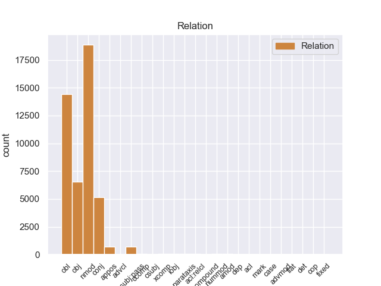
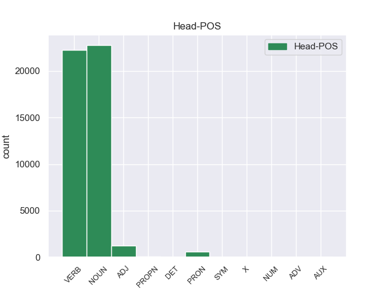
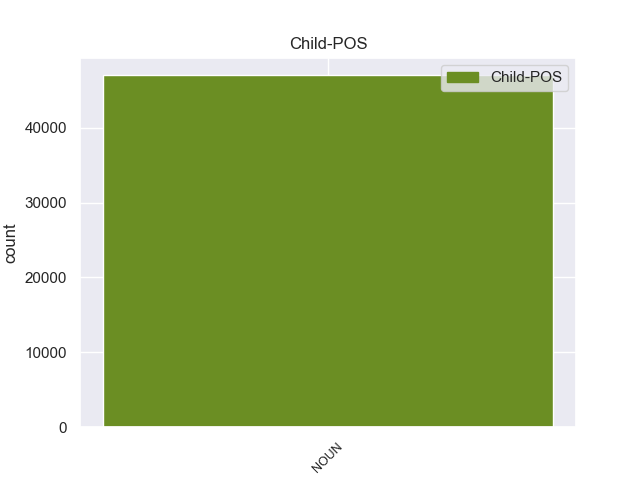

Distribution of features within this leaf



Agreement Rules sorted by frequency.
- When the dependent token is the nominal modifier(nmod) of the head token, and the head token is NOUN and the dependent token is NOUN.
1 En _ _ _ _ 0 _ _ _
2 1991 _ _ _ _ 0 _ _ _
3 , _ _ _ _ 0 _ _ _
4 como _ _ _ _ 0 _ _ _
5 ya _ _ _ _ 0 _ _ _
6 está _ _ _ _ 0 _ _ _
7 indicado _ _ _ _ 0 _ _ _
8 en _ _ _ _ 0 _ _ _
9 el _ _ _ _ 0 _ _ _
10 párrafo _ _ _ _ 0 _ _ _
11 anterior _ _ _ _ 0 _ _ _
12 , _ _ _ _ 0 _ _ _
13 se _ _ _ _ 0 _ _ _
14 creó _ _ _ _ 0 _ _ _
15 un _ _ _ _ 0 _ _ _
16 equipo _ _ _ _ 0 _ _ _
17 ad _ _ _ _ 0 _ _ _
18 hoc _ _ _ _ 0 _ _ _
19 para _ _ _ _ 0 _ _ _
20 averiguar _ _ _ _ 0 _ _ _
21 como _ _ _ _ 0 _ _ _
22 se _ _ _ _ 0 _ _ _
23 podía _ _ _ _ 0 _ _ _
24 desarrollar _ _ _ _ 0 _ _ _
25 el _ _ _ _ 0 _ _ _
26 Dialogo _ _ _ _ 0 _ _ _
27 Social _ _ _ _ 0 _ _ _
28 , _ _ _ _ 0 _ _ _
29 este _ _ _ _ 0 _ _ _
30 equipo _ _ _ _ 0 _ _ _
31 estaba _ _ _ _ 0 _ _ _
32 formado _ _ _ _ 0 _ _ _
33 por _ _ _ _ 0 _ _ _
34 representantes representante NOUN _ Number=Plur 0 _ _ _
35 de _ _ _ _ 0 _ _ _
36 todas _ _ _ _ 0 _ _ _
37 las _ _ _ _ 0 _ _ _
38 organizaciones organización NOUN _ Gender=Fem|Number=Plur 34 nmod _ _
39 relacionadas _ _ _ _ 0 _ _ _
40 con _ _ _ _ 0 _ _ _
41 CES _ _ _ _ 0 _ _ _
42 , _ _ _ _ 0 _ _ _
43 UNICE _ _ _ _ 0 _ _ _
44 y _ _ _ _ 0 _ _ _
45 CEEP _ _ _ _ 0 _ _ _
46 ; _ _ _ _ 0 _ _ _
1 En _ _ _ _ 0 _ _ _
2 1991 _ _ _ _ 0 _ _ _
3 , _ _ _ _ 0 _ _ _
4 como _ _ _ _ 0 _ _ _
5 ya _ _ _ _ 0 _ _ _
6 está _ _ _ _ 0 _ _ _
7 indicado indicar VERB _ Gender=Masc|Number=Sing|Tense=Past|VerbForm=Part 0 _ _ _
8 en _ _ _ _ 0 _ _ _
9 el _ _ _ _ 0 _ _ _
10 párrafo párrafo NOUN _ Gender=Masc|Number=Sing 7 obl _ _
11 anterior _ _ _ _ 0 _ _ _
12 , _ _ _ _ 0 _ _ _
13 se _ _ _ _ 0 _ _ _
14 creó _ _ _ _ 0 _ _ _
15 un _ _ _ _ 0 _ _ _
16 equipo _ _ _ _ 0 _ _ _
17 ad _ _ _ _ 0 _ _ _
18 hoc _ _ _ _ 0 _ _ _
19 para _ _ _ _ 0 _ _ _
20 averiguar _ _ _ _ 0 _ _ _
21 como _ _ _ _ 0 _ _ _
22 se _ _ _ _ 0 _ _ _
23 podía _ _ _ _ 0 _ _ _
24 desarrollar _ _ _ _ 0 _ _ _
25 el _ _ _ _ 0 _ _ _
26 Dialogo _ _ _ _ 0 _ _ _
27 Social _ _ _ _ 0 _ _ _
28 , _ _ _ _ 0 _ _ _
29 este _ _ _ _ 0 _ _ _
30 equipo _ _ _ _ 0 _ _ _
31 estaba _ _ _ _ 0 _ _ _
32 formado _ _ _ _ 0 _ _ _
33 por _ _ _ _ 0 _ _ _
34 representantes _ _ _ _ 0 _ _ _
35 de _ _ _ _ 0 _ _ _
36 todas _ _ _ _ 0 _ _ _
37 las _ _ _ _ 0 _ _ _
38 organizaciones _ _ _ _ 0 _ _ _
39 relacionadas _ _ _ _ 0 _ _ _
40 con _ _ _ _ 0 _ _ _
41 CES _ _ _ _ 0 _ _ _
42 , _ _ _ _ 0 _ _ _
43 UNICE _ _ _ _ 0 _ _ _
44 y _ _ _ _ 0 _ _ _
45 CEEP _ _ _ _ 0 _ _ _
46 ; _ _ _ _ 0 _ _ _
1 Una _ _ _ _ 0 _ _ _
2 vez _ _ _ _ 0 _ _ _
3 que _ _ _ _ 0 _ _ _
4 el _ _ _ _ 0 _ _ _
5 Hijo _ _ _ _ 0 _ _ _
6 de _ _ _ _ 0 _ _ _
7 Krypton _ _ _ _ 0 _ _ _
8 suelta sueltar VERB _ Mood=Ind|Number=Sing|Person=3|Tense=Pres|VerbForm=Fin 0 _ _ _
9 el _ _ _ _ 0 _ _ _
10 misil misil NOUN _ Gender=Masc|Number=Sing 8 obj _ _
11 , _ _ _ _ 0 _ _ _
12 este _ _ _ _ 0 _ _ _
13 intenta _ _ _ _ 0 _ _ _
14 huir _ _ _ _ 0 _ _ _
15 de _ _ _ _ 0 _ _ _
16 el _ _ _ _ 0 _ _ _
17 lugar _ _ _ _ 0 _ _ _
18 pero _ _ _ _ 0 _ _ _
19 es _ _ _ _ 0 _ _ _
20 atrapado _ _ _ _ 0 _ _ _
21 en _ _ _ _ 0 _ _ _
22 la _ _ _ _ 0 _ _ _
23 explosión _ _ _ _ 0 _ _ _
24 . _ _ _ _ 0 _ _ _
1 Esta _ _ _ _ 0 _ _ _
2 teoría _ _ _ _ 0 _ _ _
3 se _ _ _ _ 0 _ _ _
4 avenía _ _ _ _ 0 _ _ _
5 bien _ _ _ _ 0 _ _ _
6 con _ _ _ _ 0 _ _ _
7 la _ _ _ _ 0 _ _ _
8 creencia _ _ _ _ 0 _ _ _
9 de _ _ _ _ 0 _ _ _
10 el _ _ _ _ 0 _ _ _
11 Romanticismo _ _ _ _ 0 _ _ _
12 en _ _ _ _ 0 _ _ _
13 un _ _ _ _ 0 _ _ _
14 volkgeist _ _ _ _ 0 _ _ _
15 , _ _ _ _ 0 _ _ _
16 " _ _ _ _ 0 _ _ _
17 genio genio NOUN _ Gender=Masc|Number=Sing 0 _ _ _
18 o _ _ _ _ 0 _ _ _
19 espíritu espíritu NOUN _ Gender=Masc|Number=Sing 17 conj _ _
20 de _ _ _ _ 0 _ _ _
21 el _ _ _ _ 0 _ _ _
22 pueblo _ _ _ _ 0 _ _ _
23 " _ _ _ _ 0 _ _ _
24 , _ _ _ _ 0 _ _ _
25 autor _ _ _ _ 0 _ _ _
26 colectivo _ _ _ _ 0 _ _ _
27 y _ _ _ _ 0 _ _ _
28 anónimo _ _ _ _ 0 _ _ _
29 de _ _ _ _ 0 _ _ _
30 una _ _ _ _ 0 _ _ _
31 poesía _ _ _ _ 0 _ _ _
32 nacional _ _ _ _ 0 _ _ _
33 . _ _ _ _ 0 _ _ _
1 En _ _ _ _ 0 _ _ _
2 1991 _ _ _ _ 0 _ _ _
3 , _ _ _ _ 0 _ _ _
4 como _ _ _ _ 0 _ _ _
5 ya _ _ _ _ 0 _ _ _
6 está _ _ _ _ 0 _ _ _
7 indicado _ _ _ _ 0 _ _ _
8 en _ _ _ _ 0 _ _ _
9 el _ _ _ _ 0 _ _ _
10 párrafo _ _ _ _ 0 _ _ _
11 anterior _ _ _ _ 0 _ _ _
12 , _ _ _ _ 0 _ _ _
13 se _ _ _ _ 0 _ _ _
14 creó _ _ _ _ 0 _ _ _
15 un _ _ _ _ 0 _ _ _
16 equipo _ _ _ _ 0 _ _ _
17 ad _ _ _ _ 0 _ _ _
18 hoc _ _ _ _ 0 _ _ _
19 para _ _ _ _ 0 _ _ _
20 averiguar _ _ _ _ 0 _ _ _
21 como _ _ _ _ 0 _ _ _
22 se _ _ _ _ 0 _ _ _
23 podía _ _ _ _ 0 _ _ _
24 desarrollar _ _ _ _ 0 _ _ _
25 el _ _ _ _ 0 _ _ _
26 Dialogo _ _ _ _ 0 _ _ _
27 Social _ _ _ _ 0 _ _ _
28 , _ _ _ _ 0 _ _ _
29 este _ _ _ _ 0 _ _ _
30 equipo equipo NOUN _ Gender=Masc|Number=Sing 32 nsubj:pass _ _
31 estaba _ _ _ _ 0 _ _ _
32 formado formar VERB _ Gender=Masc|Number=Sing|VerbForm=Part 0 _ _ _
33 por _ _ _ _ 0 _ _ _
34 representantes _ _ _ _ 0 _ _ _
35 de _ _ _ _ 0 _ _ _
36 todas _ _ _ _ 0 _ _ _
37 las _ _ _ _ 0 _ _ _
38 organizaciones _ _ _ _ 0 _ _ _
39 relacionadas _ _ _ _ 0 _ _ _
40 con _ _ _ _ 0 _ _ _
41 CES _ _ _ _ 0 _ _ _
42 , _ _ _ _ 0 _ _ _
43 UNICE _ _ _ _ 0 _ _ _
44 y _ _ _ _ 0 _ _ _
45 CEEP _ _ _ _ 0 _ _ _
46 ; _ _ _ _ 0 _ _ _
1 Esta _ _ _ _ 0 _ _ _
2 teoría _ _ _ _ 0 _ _ _
3 se _ _ _ _ 0 _ _ _
4 avenía _ _ _ _ 0 _ _ _
5 bien _ _ _ _ 0 _ _ _
6 con _ _ _ _ 0 _ _ _
7 la _ _ _ _ 0 _ _ _
8 creencia _ _ _ _ 0 _ _ _
9 de _ _ _ _ 0 _ _ _
10 el _ _ _ _ 0 _ _ _
11 Romanticismo _ _ _ _ 0 _ _ _
12 en _ _ _ _ 0 _ _ _
13 un _ _ _ _ 0 _ _ _
14 volkgeist volkgeist NOUN _ Gender=Masc|Number=Sing 0 _ _ _
15 , _ _ _ _ 0 _ _ _
16 " _ _ _ _ 0 _ _ _
17 genio _ _ _ _ 0 _ _ _
18 o _ _ _ _ 0 _ _ _
19 espíritu _ _ _ _ 0 _ _ _
20 de _ _ _ _ 0 _ _ _
21 el _ _ _ _ 0 _ _ _
22 pueblo _ _ _ _ 0 _ _ _
23 " _ _ _ _ 0 _ _ _
24 , _ _ _ _ 0 _ _ _
25 autor autor NOUN _ Gender=Masc|Number=Sing 14 appos _ _
26 colectivo _ _ _ _ 0 _ _ _
27 y _ _ _ _ 0 _ _ _
28 anónimo _ _ _ _ 0 _ _ _
29 de _ _ _ _ 0 _ _ _
30 una _ _ _ _ 0 _ _ _
31 poesía _ _ _ _ 0 _ _ _
32 nacional _ _ _ _ 0 _ _ _
33 . _ _ _ _ 0 _ _ _
1 Esta _ _ _ _ 0 _ _ _
2 teoría _ _ _ _ 0 _ _ _
3 se _ _ _ _ 0 _ _ _
4 avenía _ _ _ _ 0 _ _ _
5 bien _ _ _ _ 0 _ _ _
6 con _ _ _ _ 0 _ _ _
7 la _ _ _ _ 0 _ _ _
8 creencia _ _ _ _ 0 _ _ _
9 de _ _ _ _ 0 _ _ _
10 el _ _ _ _ 0 _ _ _
11 Romanticismo _ _ _ _ 0 _ _ _
12 en _ _ _ _ 0 _ _ _
13 un _ _ _ _ 0 _ _ _
14 volkgeist _ _ _ _ 0 _ _ _
15 , _ _ _ _ 0 _ _ _
16 " _ _ _ _ 0 _ _ _
17 genio _ _ _ _ 0 _ _ _
18 o _ _ _ _ 0 _ _ _
19 espíritu _ _ _ _ 0 _ _ _
20 de _ _ _ _ 0 _ _ _
21 el _ _ _ _ 0 _ _ _
22 pueblo _ _ _ _ 0 _ _ _
23 " _ _ _ _ 0 _ _ _
24 , _ _ _ _ 0 _ _ _
25 autor _ _ _ _ 0 _ _ _
26 colectivo _ _ _ _ 0 _ _ _
27 y _ _ _ _ 0 _ _ _
28 anónimo anónimo ADJ _ Gender=Masc|Number=Sing 0 _ _ _
29 de _ _ _ _ 0 _ _ _
30 una _ _ _ _ 0 _ _ _
31 poesía poesía NOUN _ Gender=Fem|Number=Sing 28 nmod _ _
32 nacional _ _ _ _ 0 _ _ _
33 . _ _ _ _ 0 _ _ _
1 Su _ _ _ _ 0 _ _ _
2 primogénito _ _ _ _ 0 _ _ _
3 Francisco _ _ _ _ 0 _ _ _
4 Diego _ _ _ _ 0 _ _ _
5 , _ _ _ _ 0 _ _ _
6 renunció renunciar VERB _ Mood=Ind|Number=Sing|Person=3|Tense=Past|VerbForm=Fin 0 _ _ _
7 a _ _ _ _ 0 _ _ _
8 su _ _ _ _ 0 _ _ _
9 herencia _ _ _ _ 0 _ _ _
10 , _ _ _ _ 0 _ _ _
11 títulos _ _ _ _ 0 _ _ _
12 y _ _ _ _ 0 _ _ _
13 estados _ _ _ _ 0 _ _ _
14 y _ _ _ _ 0 _ _ _
15 se _ _ _ _ 0 _ _ _
16 hizo _ _ _ _ 0 _ _ _
17 en _ _ _ _ 0 _ _ _
18 1601 _ _ _ _ 0 _ _ _
19 religioso _ _ _ _ 0 _ _ _
20 en _ _ _ _ 0 _ _ _
21 la _ _ _ _ 0 _ _ _
22 Orden _ _ _ _ 0 _ _ _
23 de _ _ _ _ 0 _ _ _
24 Santo _ _ _ _ 0 _ _ _
25 Domingo _ _ _ _ 0 _ _ _
26 , _ _ _ _ 0 _ _ _
27 donde _ _ _ _ 0 _ _ _
28 tomó _ _ _ _ 0 _ _ _
29 el _ _ _ _ 0 _ _ _
30 nombre _ _ _ _ 0 _ _ _
31 de _ _ _ _ 0 _ _ _
32 fray _ _ _ _ 0 _ _ _
33 Francisco _ _ _ _ 0 _ _ _
34 de _ _ _ _ 0 _ _ _
35 la _ _ _ _ 0 _ _ _
36 Cruz _ _ _ _ 0 _ _ _
37 , _ _ _ _ 0 _ _ _
38 su _ _ _ _ 0 _ _ _
39 segundogénito _ _ _ _ 0 _ _ _
40 Alonso _ _ _ _ 0 _ _ _
41 Diego _ _ _ _ 0 _ _ _
42 fue _ _ _ _ 0 _ _ _
43 su _ _ _ _ 0 _ _ _
44 sucesor sucesor NOUN _ Gender=Masc|Number=Sing 6 conj _ _
45 , _ _ _ _ 0 _ _ _
46 y _ _ _ _ 0 _ _ _
47 su _ _ _ _ 0 _ _ _
48 hija _ _ _ _ 0 _ _ _
49 Guiomar _ _ _ _ 0 _ _ _
50 Leonor _ _ _ _ 0 _ _ _
51 Brianda _ _ _ _ 0 _ _ _
52 se _ _ _ _ 0 _ _ _
53 casó _ _ _ _ 0 _ _ _
54 con _ _ _ _ 0 _ _ _
55 su _ _ _ _ 0 _ _ _
56 primo _ _ _ _ 0 _ _ _
57 hermano _ _ _ _ 0 _ _ _
58 Francisco _ _ _ _ 0 _ _ _
59 Antonio _ _ _ _ 0 _ _ _
60 Silvestre _ _ _ _ 0 _ _ _
61 de _ _ _ _ 0 _ _ _
62 Zúñiga _ _ _ _ 0 _ _ _
63 Sotomayor _ _ _ _ 0 _ _ _
64 , _ _ _ _ 0 _ _ _
65 V _ _ _ _ 0 _ _ _
66 marqués _ _ _ _ 0 _ _ _
67 de _ _ _ _ 0 _ _ _
68 Ayamonte _ _ _ _ 0 _ _ _
69 , _ _ _ _ 0 _ _ _
70 sin _ _ _ _ 0 _ _ _
71 sucesión _ _ _ _ 0 _ _ _
72 en _ _ _ _ 0 _ _ _
73 su _ _ _ _ 0 _ _ _
74 matrimonio _ _ _ _ 0 _ _ _
75 . _ _ _ _ 0 _ _ _
1 De _ _ _ _ 0 _ _ _
2 las _ _ _ _ 0 _ _ _
3 8 _ _ _ _ 0 _ _ _
4 porciones _ _ _ _ 0 _ _ _
5 , _ _ _ _ 0 _ _ _
6 cuatro _ _ _ _ 0 _ _ _
7 correspondieron _ _ _ _ 0 _ _ _
8 a _ _ _ _ 0 _ _ _
9 el _ _ _ _ 0 _ _ _
10 rey _ _ _ _ 0 _ _ _
11 , _ _ _ _ 0 _ _ _
12 una _ _ _ _ 0 _ _ _
13 a _ _ _ _ 0 _ _ _
14 el _ _ _ _ 0 _ _ _
15 conde _ _ _ _ 0 _ _ _
16 de _ _ _ _ 0 _ _ _
17 el _ _ _ _ 0 _ _ _
18 Rosellón _ _ _ _ 0 _ _ _
19 Nuño _ _ _ _ 0 _ _ _
20 Sánchez _ _ _ _ 0 _ _ _
21 , _ _ _ _ 0 _ _ _
22 una _ _ _ _ 0 _ _ _
23 a _ _ _ _ 0 _ _ _
24 el _ _ _ _ 0 _ _ _
25 obispo _ _ _ _ 0 _ _ _
26 de _ _ _ _ 0 _ _ _
27 Barcelona _ _ _ _ 0 _ _ _
28 Berenguer _ _ _ _ 0 _ _ _
29 de _ _ _ _ 0 _ _ _
30 Palou _ _ _ _ 0 _ _ _
31 , _ _ _ _ 0 _ _ _
32 una _ _ _ _ 0 _ _ _
33 a _ _ _ _ 0 _ _ _
34 el _ _ _ _ 0 _ _ _
35 Conde _ _ _ _ 0 _ _ _
36 de _ _ _ _ 0 _ _ _
37 Ampurias _ _ _ _ 0 _ _ _
38 y _ _ _ _ 0 _ _ _
39 finalmente _ _ _ _ 0 _ _ _
40 otra otro PRON _ Gender=Fem|Number=Sing|PronType=Ind 0 _ _ _
41 a _ _ _ _ 0 _ _ _
42 el _ _ _ _ 0 _ _ _
43 vizconde vizconde NOUN _ Gender=Masc|Number=Sing 40 nmod _ _
44 de _ _ _ _ 0 _ _ _
45 Bearn _ _ _ _ 0 _ _ _
46 . _ _ _ _ 0 _ _ _
1 En _ _ _ _ 0 _ _ _
2 estos _ _ _ _ 0 _ _ _
3 trabajos _ _ _ _ 0 _ _ _
4 se _ _ _ _ 0 _ _ _
5 pusieron _ _ _ _ 0 _ _ _
6 a _ _ _ _ 0 _ _ _
7 el _ _ _ _ 0 _ _ _
8 descubierto _ _ _ _ 0 _ _ _
9 25 _ _ _ _ 0 _ _ _
10 vanos _ _ _ _ 0 _ _ _
11 correspondientes correspondiente ADJ _ Number=Plur 0 _ _ _
12 a _ _ _ _ 0 _ _ _
13 ventanas ventana NOUN _ Gender=Fem|Number=Plur 11 obl _ _
14 saeteras _ _ _ _ 0 _ _ _
15 que _ _ _ _ 0 _ _ _
16 habían _ _ _ _ 0 _ _ _
17 sido _ _ _ _ 0 _ _ _
18 tapiadas _ _ _ _ 0 _ _ _
19 en _ _ _ _ 0 _ _ _
20 los _ _ _ _ 0 _ _ _
21 siglos _ _ _ _ 0 _ _ _
22 anteriores _ _ _ _ 0 _ _ _
23 . _ _ _ _ 0 _ _ _
1 Ciertamente _ _ _ _ 0 _ _ _
2 no _ _ _ _ 0 _ _ _
3 es _ _ _ _ 0 _ _ _
4 lo _ _ _ _ 0 _ _ _
5 mismo mismo ADJ _ Gender=Masc|Number=Sing 0 _ _ _
6 que _ _ _ _ 0 _ _ _
7 asistir _ _ _ _ 0 _ _ _
8 in _ _ _ _ 0 _ _ _
9 situ _ _ _ _ 0 _ _ _
10 , _ _ _ _ 0 _ _ _
11 pero _ _ _ _ 0 _ _ _
12 si _ _ _ _ 0 _ _ _
13 te _ _ _ _ 0 _ _ _
14 has _ _ _ _ 0 _ _ _
15 quedado _ _ _ _ 0 _ _ _
16 sin _ _ _ _ 0 _ _ _
17 entrada _ _ _ _ 0 _ _ _
18 para _ _ _ _ 0 _ _ _
19 el _ _ _ _ 0 _ _ _
20 festival _ _ _ _ 0 _ _ _
21 , _ _ _ _ 0 _ _ _
22 sin _ _ _ _ 0 _ _ _
23 duda _ _ _ _ 0 _ _ _
24 esta _ _ _ _ 0 _ _ _
25 es _ _ _ _ 0 _ _ _
26 la _ _ _ _ 0 _ _ _
27 respuesta respuesta NOUN _ Gender=Fem|Number=Sing 5 conj _ _
28 que _ _ _ _ 0 _ _ _
29 andabas _ _ _ _ 0 _ _ _
30 buscando _ _ _ _ 0 _ _ _
31 . _ _ _ _ 0 _ _ _
1 La _ _ _ _ 0 _ _ _
2 presentación _ _ _ _ 0 _ _ _
3 de _ _ _ _ 0 _ _ _
4 el _ _ _ _ 0 _ _ _
5 nuevo _ _ _ _ 0 _ _ _
6 zar _ _ _ _ 0 _ _ _
7 no _ _ _ _ 0 _ _ _
8 puede _ _ _ _ 0 _ _ _
9 ser _ _ _ _ 0 _ _ _
10 más _ _ _ _ 0 _ _ _
11 humilde _ _ _ _ 0 _ _ _
12 y _ _ _ _ 0 _ _ _
13 contenida _ _ _ _ 0 _ _ _
14 , _ _ _ _ 0 _ _ _
15 y _ _ _ _ 0 _ _ _
16 este _ _ _ _ 0 _ _ _
17 comienza _ _ _ _ 0 _ _ _
18 expresando _ _ _ _ 0 _ _ _
19 sus _ _ _ _ 0 _ _ _
20 temores temore NOUN _ Gender=Masc|Number=Plur 23 amod _ _
21 y _ _ _ _ 0 _ _ _
22 sombríos _ _ _ _ 0 _ _ _
23 presentimientos presentimiento NOUN _ Gender=Masc|Number=Plur 0 _ _ _
24 , _ _ _ _ 0 _ _ _
25 para _ _ _ _ 0 _ _ _
26 continuar _ _ _ _ 0 _ _ _
27 con _ _ _ _ 0 _ _ _
28 una _ _ _ _ 0 _ _ _
29 plegaria _ _ _ _ 0 _ _ _
30 . _ _ _ _ 0 _ _ _
1 En _ _ _ _ 0 _ _ _
2 este _ _ _ _ 0 _ _ _
3 contexto _ _ _ _ 0 _ _ _
4 , _ _ _ _ 0 _ _ _
5 el _ _ _ _ 0 _ _ _
6 prelado _ _ _ _ 0 _ _ _
7 destacó destacar VERB _ Mood=Ind|Number=Sing|Person=3|Tense=Past|VerbForm=Fin 0 _ _ _
8 que _ _ _ _ 0 _ _ _
9 el _ _ _ _ 0 _ _ _
10 pueblo _ _ _ _ 0 _ _ _
11 santiagueño _ _ _ _ 0 _ _ _
12 es _ _ _ _ 0 _ _ _
13 " _ _ _ _ 0 _ _ _
14 modelo modelo NOUN _ Gender=Masc|Number=Sing 7 ccomp _ _
15 de _ _ _ _ 0 _ _ _
16 el _ _ _ _ 0 _ _ _
17 discípulo _ _ _ _ 0 _ _ _
18 misionero _ _ _ _ 0 _ _ _
19 que _ _ _ _ 0 _ _ _
20 todos _ _ _ _ 0 _ _ _
21 tenemos _ _ _ _ 0 _ _ _
22 que _ _ _ _ 0 _ _ _
23 ser _ _ _ _ 0 _ _ _
24 " _ _ _ _ 0 _ _ _
25 . _ _ _ _ 0 _ _ _
1 A _ _ _ _ 0 _ _ _
2 continuación _ _ _ _ 0 _ _ _
3 , _ _ _ _ 0 _ _ _
4 sonarán sonará VERB _ Mood=Ind|Number=Plur|Person=3|Tense=Pres|VerbForm=Fin 0 _ _ _
5 los _ _ _ _ 0 _ _ _
6 ritmos _ _ _ _ 0 _ _ _
7 más _ _ _ _ 0 _ _ _
8 intensos _ _ _ _ 0 _ _ _
9 de _ _ _ _ 0 _ _ _
10 los _ _ _ _ 0 _ _ _
11 llanos _ _ _ _ 0 _ _ _
12 interpretados _ _ _ _ 0 _ _ _
13 por _ _ _ _ 0 _ _ _
14 una _ _ _ _ 0 _ _ _
15 agrupación _ _ _ _ 0 _ _ _
16 que _ _ _ _ 0 _ _ _
17 romperá _ _ _ _ 0 _ _ _
18 esquemas _ _ _ _ 0 _ _ _
19 : _ _ _ _ 0 _ _ _
20 el _ _ _ _ 0 _ _ _
21 Ensamble _ _ _ _ 0 _ _ _
22 de _ _ _ _ 0 _ _ _
23 Arpas _ _ _ _ 0 _ _ _
24 de _ _ _ _ 0 _ _ _
25 la _ _ _ _ 0 _ _ _
26 Orquesta _ _ _ _ 0 _ _ _
27 de _ _ _ _ 0 _ _ _
28 Música _ _ _ _ 0 _ _ _
29 Popular _ _ _ _ 0 _ _ _
30 de _ _ _ _ 0 _ _ _
31 el _ _ _ _ 0 _ _ _
32 Estado _ _ _ _ 0 _ _ _
33 Guárico _ _ _ _ 0 _ _ _
34 , _ _ _ _ 0 _ _ _
35 integrado _ _ _ _ 0 _ _ _
36 por _ _ _ _ 0 _ _ _
37 14 _ _ _ _ 0 _ _ _
38 ejecutantes _ _ _ _ 0 _ _ _
39 , _ _ _ _ 0 _ _ _
40 todos _ _ _ _ 0 _ _ _
41 formados _ _ _ _ 0 _ _ _
42 por _ _ _ _ 0 _ _ _
43 El _ _ _ _ 0 _ _ _
44 Sistema _ _ _ _ 0 _ _ _
45 , _ _ _ _ 0 _ _ _
46 siendo _ _ _ _ 0 _ _ _
47 algunos _ _ _ _ 0 _ _ _
48 de _ _ _ _ 0 _ _ _
49 ellos _ _ _ _ 0 _ _ _
50 ganadores ganadore NOUN _ Gender=Masc|Number=Plur 4 parataxis _ _
51 de _ _ _ _ 0 _ _ _
52 el _ _ _ _ 0 _ _ _
53 reconocido _ _ _ _ 0 _ _ _
54 Festival _ _ _ _ 0 _ _ _
55 Internacional _ _ _ _ 0 _ _ _
56 de _ _ _ _ 0 _ _ _
57 Arpas _ _ _ _ 0 _ _ _
58 Infantil _ _ _ _ 0 _ _ _
59 y _ _ _ _ 0 _ _ _
60 Adultos _ _ _ _ 0 _ _ _
61 de _ _ _ _ 0 _ _ _
62 Villavicencio _ _ _ _ 0 _ _ _
63 , _ _ _ _ 0 _ _ _
64 Colombia _ _ _ _ 0 _ _ _
65 . _ _ _ _ 0 _ _ _
1 Su _ _ _ _ 0 _ _ _
2 primogénito _ _ _ _ 0 _ _ _
3 Francisco _ _ _ _ 0 _ _ _
4 Diego _ _ _ _ 0 _ _ _
5 , _ _ _ _ 0 _ _ _
6 renunció _ _ _ _ 0 _ _ _
7 a _ _ _ _ 0 _ _ _
8 su _ _ _ _ 0 _ _ _
9 herencia _ _ _ _ 0 _ _ _
10 , _ _ _ _ 0 _ _ _
11 títulos _ _ _ _ 0 _ _ _
12 y _ _ _ _ 0 _ _ _
13 estados _ _ _ _ 0 _ _ _
14 y _ _ _ _ 0 _ _ _
15 se _ _ _ _ 0 _ _ _
16 hizo hacer VERB _ Mood=Ind|Number=Sing|Person=3|Tense=Past|VerbForm=Fin 0 _ _ _
17 en _ _ _ _ 0 _ _ _
18 1601 _ _ _ _ 0 _ _ _
19 religioso religioso NOUN _ Gender=Masc|Number=Sing 16 xcomp _ _
20 en _ _ _ _ 0 _ _ _
21 la _ _ _ _ 0 _ _ _
22 Orden _ _ _ _ 0 _ _ _
23 de _ _ _ _ 0 _ _ _
24 Santo _ _ _ _ 0 _ _ _
25 Domingo _ _ _ _ 0 _ _ _
26 , _ _ _ _ 0 _ _ _
27 donde _ _ _ _ 0 _ _ _
28 tomó _ _ _ _ 0 _ _ _
29 el _ _ _ _ 0 _ _ _
30 nombre _ _ _ _ 0 _ _ _
31 de _ _ _ _ 0 _ _ _
32 fray _ _ _ _ 0 _ _ _
33 Francisco _ _ _ _ 0 _ _ _
34 de _ _ _ _ 0 _ _ _
35 la _ _ _ _ 0 _ _ _
36 Cruz _ _ _ _ 0 _ _ _
37 , _ _ _ _ 0 _ _ _
38 su _ _ _ _ 0 _ _ _
39 segundogénito _ _ _ _ 0 _ _ _
40 Alonso _ _ _ _ 0 _ _ _
41 Diego _ _ _ _ 0 _ _ _
42 fue _ _ _ _ 0 _ _ _
43 su _ _ _ _ 0 _ _ _
44 sucesor _ _ _ _ 0 _ _ _
45 , _ _ _ _ 0 _ _ _
46 y _ _ _ _ 0 _ _ _
47 su _ _ _ _ 0 _ _ _
48 hija _ _ _ _ 0 _ _ _
49 Guiomar _ _ _ _ 0 _ _ _
50 Leonor _ _ _ _ 0 _ _ _
51 Brianda _ _ _ _ 0 _ _ _
52 se _ _ _ _ 0 _ _ _
53 casó _ _ _ _ 0 _ _ _
54 con _ _ _ _ 0 _ _ _
55 su _ _ _ _ 0 _ _ _
56 primo _ _ _ _ 0 _ _ _
57 hermano _ _ _ _ 0 _ _ _
58 Francisco _ _ _ _ 0 _ _ _
59 Antonio _ _ _ _ 0 _ _ _
60 Silvestre _ _ _ _ 0 _ _ _
61 de _ _ _ _ 0 _ _ _
62 Zúñiga _ _ _ _ 0 _ _ _
63 Sotomayor _ _ _ _ 0 _ _ _
64 , _ _ _ _ 0 _ _ _
65 V _ _ _ _ 0 _ _ _
66 marqués _ _ _ _ 0 _ _ _
67 de _ _ _ _ 0 _ _ _
68 Ayamonte _ _ _ _ 0 _ _ _
69 , _ _ _ _ 0 _ _ _
70 sin _ _ _ _ 0 _ _ _
71 sucesión _ _ _ _ 0 _ _ _
72 en _ _ _ _ 0 _ _ _
73 su _ _ _ _ 0 _ _ _
74 matrimonio _ _ _ _ 0 _ _ _
75 . _ _ _ _ 0 _ _ _
1 Son _ _ _ _ 0 _ _ _
2 jugadores _ _ _ _ 0 _ _ _
3 jóvenes _ _ _ _ 0 _ _ _
4 , _ _ _ _ 0 _ _ _
5 con _ _ _ _ 0 _ _ _
6 proyección _ _ _ _ 0 _ _ _
7 y _ _ _ _ 0 _ _ _
8 pueden _ _ _ _ 0 _ _ _
9 venir _ _ _ _ 0 _ _ _
10 muy _ _ _ _ 0 _ _ _
11 bien _ _ _ _ 0 _ _ _
12 a _ _ _ _ 0 _ _ _
13 el _ _ _ _ 0 _ _ _
14 once once NOUN _ Gender=Masc|Number=Sing 15 nummod _ _
15 titular titular NOUN _ Number=Sing 0 _ _ _
16 de _ _ _ _ 0 _ _ _
17 el _ _ _ _ 0 _ _ _
18 de _ _ _ _ 0 _ _ _
19 Santpedor _ _ _ _ 0 _ _ _
20 . _ _ _ _ 0 _ _ _
1 Esto _ _ _ _ 0 _ _ _
2 produce _ _ _ _ 0 _ _ _
3 una _ _ _ _ 0 _ _ _
4 distorsión distorsión NOUN _ Gender=Fem|Number=Sing 0 _ _ _
5 que _ _ _ _ 0 _ _ _
6 es _ _ _ _ 0 _ _ _
7 consecuencia consecuencia NOUN _ Gender=Fem|Number=Sing 4 acl:relcl _ _
8 de _ _ _ _ 0 _ _ _
9 una _ _ _ _ 0 _ _ _
10 razón _ _ _ _ 0 _ _ _
11 instrumental _ _ _ _ 0 _ _ _
12 , _ _ _ _ 0 _ _ _
13 como _ _ _ _ 0 _ _ _
14 conocimiento _ _ _ _ 0 _ _ _
15 interesado _ _ _ _ 0 _ _ _
16 , _ _ _ _ 0 _ _ _
17 y _ _ _ _ 0 _ _ _
18 que _ _ _ _ 0 _ _ _
19 es _ _ _ _ 0 _ _ _
20 la _ _ _ _ 0 _ _ _
21 responsable _ _ _ _ 0 _ _ _
22 de _ _ _ _ 0 _ _ _
23 la _ _ _ _ 0 _ _ _
24 ciencia _ _ _ _ 0 _ _ _
25 y _ _ _ _ 0 _ _ _
26 la _ _ _ _ 0 _ _ _
27 tecnología _ _ _ _ 0 _ _ _
28 falsas _ _ _ _ 0 _ _ _
29 como _ _ _ _ 0 _ _ _
30 ejes _ _ _ _ 0 _ _ _
31 de _ _ _ _ 0 _ _ _
32 la _ _ _ _ 0 _ _ _
33 dominación _ _ _ _ 0 _ _ _
34 social _ _ _ _ 0 _ _ _
35 . _ _ _ _ 0 _ _ _
1 El _ _ _ _ 0 _ _ _
2 Jardín jardín PROPN _ Gender=Masc|Number=Sing 0 _ _ _
3 Botánico _ _ _ _ 0 _ _ _
4 de _ _ _ _ 0 _ _ _
5 Naples _ _ _ _ 0 _ _ _
6 ( _ _ _ _ 0 _ _ _
7 en _ _ _ _ 0 _ _ _
8 inglés inglés NOUN _ Gender=Masc|Number=Sing 2 nmod _ _
9 : _ _ _ _ 0 _ _ _
10 Naples _ _ _ _ 0 _ _ _
11 Botanical _ _ _ _ 0 _ _ _
12 Garden _ _ _ _ 0 _ _ _
13 ) _ _ _ _ 0 _ _ _
14 es _ _ _ _ 0 _ _ _
15 un _ _ _ _ 0 _ _ _
16 jardín _ _ _ _ 0 _ _ _
17 botánico _ _ _ _ 0 _ _ _
18 de _ _ _ _ 0 _ _ _
19 160 _ _ _ _ 0 _ _ _
20 acres _ _ _ _ 0 _ _ _
21 ( _ _ _ _ 0 _ _ _
22 64.7 _ _ _ _ 0 _ _ _
23 hectáreas _ _ _ _ 0 _ _ _
24 ) _ _ _ _ 0 _ _ _
25 de _ _ _ _ 0 _ _ _
26 extensión _ _ _ _ 0 _ _ _
27 , _ _ _ _ 0 _ _ _
28 localizado _ _ _ _ 0 _ _ _
29 en _ _ _ _ 0 _ _ _
30 Naples _ _ _ _ 0 _ _ _
31 , _ _ _ _ 0 _ _ _
32 Florida _ _ _ _ 0 _ _ _
33 , _ _ _ _ 0 _ _ _
34 en _ _ _ _ 0 _ _ _
35 los _ _ _ _ 0 _ _ _
36 Estados _ _ _ _ 0 _ _ _
37 Unidos _ _ _ _ 0 _ _ _
38 . _ _ _ _ 0 _ _ _
1 El _ _ _ _ 0 _ _ _
2 producto _ _ _ _ 0 _ _ _
3 estrella _ _ _ _ 0 _ _ _
4 de _ _ _ _ 0 _ _ _
5 el _ _ _ _ 0 _ _ _
6 lujoso _ _ _ _ 0 _ _ _
7 Haikko _ _ _ _ 0 _ _ _
8 Spa _ _ _ _ 0 _ _ _
9 , _ _ _ _ 0 _ _ _
10 situado _ _ _ _ 0 _ _ _
11 en _ _ _ _ 0 _ _ _
12 la _ _ _ _ 0 _ _ _
13 localidad _ _ _ _ 0 _ _ _
14 de _ _ _ _ 0 _ _ _
15 Porvoo _ _ _ _ 0 _ _ _
16 , _ _ _ _ 0 _ _ _
17 es _ _ _ _ 0 _ _ _
18 la _ _ _ _ 0 _ _ _
19 terapia _ _ _ _ 0 _ _ _
20 Cryo _ _ _ _ 0 _ _ _
21 : _ _ _ _ 0 _ _ _
22 el _ _ _ _ 0 _ _ _
23 cuerpo _ _ _ _ 0 _ _ _
24 se _ _ _ _ 0 _ _ _
25 somete _ _ _ _ 0 _ _ _
26 durante _ _ _ _ 0 _ _ _
27 los _ _ _ _ 0 _ _ _
28 primeros _ _ _ _ 0 _ _ _
29 minutos _ _ _ _ 0 _ _ _
30 a _ _ _ _ 0 _ _ _
31 temperaturas _ _ _ _ 0 _ _ _
32 de _ _ _ _ 0 _ _ _
33 -- _ _ _ _ 0 _ _ _
34 30 _ _ _ _ 0 _ _ _
35 y _ _ _ _ 0 _ _ _
36 -- _ _ _ _ 0 _ _ _
37 60 _ _ _ _ 0 _ _ _
38 º _ _ _ _ 0 _ _ _
39 C _ _ _ _ 0 _ _ _
40 en _ _ _ _ 0 _ _ _
41 las _ _ _ _ 0 _ _ _
42 salas _ _ _ _ 0 _ _ _
43 aisladas _ _ _ _ 0 _ _ _
44 antes _ _ _ _ 0 _ _ _
45 de _ _ _ _ 0 _ _ _
46 exponer _ _ _ _ 0 _ _ _
47 se _ _ _ _ 0 _ _ _
48 a _ _ _ _ 0 _ _ _
49 el _ _ _ _ 0 _ _ _
50 tratamiento _ _ _ _ 0 _ _ _
51 de _ _ _ _ 0 _ _ _
52 frío _ _ _ _ 0 _ _ _
53 a _ _ _ _ 0 _ _ _
54 -110 _ _ _ _ 0 _ _ _
55 º _ _ _ _ 0 _ _ _
56 C. _ _ _ _ 0 _ _ _
57 Desde _ _ _ _ 0 _ _ _
58 la _ _ _ _ 0 _ _ _
59 primera _ _ _ _ 0 _ _ _
60 sesión _ _ _ _ 0 _ _ _
61 se _ _ _ _ 0 _ _ _
62 percibe perciber VERB _ Mood=Ind|Number=Sing|Person=3|Tense=Pres|VerbForm=Fin 0 _ _ _
63 el _ _ _ _ 0 _ _ _
64 aporte _ _ _ _ 0 _ _ _
65 de _ _ _ _ 0 _ _ _
66 energía _ _ _ _ 0 _ _ _
67 resultado resultado NOUN _ Gender=Masc|Number=Sing 62 advcl _ _
68 de _ _ _ _ 0 _ _ _
69 la _ _ _ _ 0 _ _ _
70 reducción _ _ _ _ 0 _ _ _
71 de _ _ _ _ 0 _ _ _
72 tensión _ _ _ _ 0 _ _ _
73 muscular _ _ _ _ 0 _ _ _
74 y _ _ _ _ 0 _ _ _
75 el _ _ _ _ 0 _ _ _
76 alivio _ _ _ _ 0 _ _ _
77 de _ _ _ _ 0 _ _ _
78 dolores _ _ _ _ 0 _ _ _
79 y _ _ _ _ 0 _ _ _
80 enfermedades _ _ _ _ 0 _ _ _
81 . _ _ _ _ 0 _ _ _
1 Éste _ _ _ _ 0 _ _ _
2 lanzó _ _ _ _ 0 _ _ _
3 un _ _ _ _ 0 _ _ _
4 ataque _ _ _ _ 0 _ _ _
5 a _ _ _ _ 0 _ _ _
6 la _ _ _ _ 0 _ _ _
7 provincia _ _ _ _ 0 _ _ _
8 de _ _ _ _ 0 _ _ _
9 Entre _ _ _ _ 0 _ _ _
10 Ríos _ _ _ _ 0 _ _ _
11 , _ _ _ _ 0 _ _ _
12 mientras _ _ _ _ 0 _ _ _
13 ordenaba ordenr VERB _ Gender=Masc|Number=Sing|Tense=Past|VerbForm=Part 0 _ _ _
14 a _ _ _ _ 0 _ _ _
15 el _ _ _ _ 0 _ _ _
16 general general NOUN _ Number=Sing 13 iobj _ _
17 José _ _ _ _ 0 _ _ _
18 María _ _ _ _ 0 _ _ _
19 Paz _ _ _ _ 0 _ _ _
20 formar _ _ _ _ 0 _ _ _
21 un _ _ _ _ 0 _ _ _
22 ejército _ _ _ _ 0 _ _ _
23 para _ _ _ _ 0 _ _ _
24 invadir _ _ _ _ 0 _ _ _
25 la _ _ _ _ 0 _ _ _
26 provincia _ _ _ _ 0 _ _ _
27 de _ _ _ _ 0 _ _ _
28 Santa _ _ _ _ 0 _ _ _
29 Fe _ _ _ _ 0 _ _ _
30 . _ _ _ _ 0 _ _ _
1 El _ _ _ _ 0 _ _ _
2 incidente _ _ _ _ 0 _ _ _
3 de _ _ _ _ 0 _ _ _
4 el _ _ _ _ 0 _ _ _
5 Itata _ _ _ _ 0 _ _ _
6 fue _ _ _ _ 0 _ _ _
7 un _ _ _ _ 0 _ _ _
8 asunto _ _ _ _ 0 _ _ _
9 diplomático _ _ _ _ 0 _ _ _
10 e _ _ _ _ 0 _ _ _
11 incidente _ _ _ _ 0 _ _ _
12 militar _ _ _ _ 0 _ _ _
13 entre _ _ _ _ 0 _ _ _
14 los _ _ _ _ 0 _ _ _
15 Estados estado PROPN _ Gender=Masc|Number=Plur 0 _ _ _
16 Unidos _ _ _ _ 0 _ _ _
17 y _ _ _ _ 0 _ _ _
18 los _ _ _ _ 0 _ _ _
19 insurgentes insurgente NOUN _ Gender=Masc|Number=Plur 15 conj _ _
20 de _ _ _ _ 0 _ _ _
21 Chile _ _ _ _ 0 _ _ _
22 durante _ _ _ _ 0 _ _ _
23 la _ _ _ _ 0 _ _ _
24 Guerra _ _ _ _ 0 _ _ _
25 Civil _ _ _ _ 0 _ _ _
26 de _ _ _ _ 0 _ _ _
27 1891 _ _ _ _ 0 _ _ _
28 . _ _ _ _ 0 _ _ _
1 Considerada _ _ _ _ 0 _ _ _
2 , _ _ _ _ 0 _ _ _
3 junto _ _ _ _ 0 _ _ _
4 a _ _ _ _ 0 _ _ _
5 La _ _ _ _ 0 _ _ _
6 lista _ _ _ _ 0 _ _ _
7 de _ _ _ _ 0 _ _ _
8 Schindler _ _ _ _ 0 _ _ _
9 de _ _ _ _ 0 _ _ _
10 Steven _ _ _ _ 0 _ _ _
11 Spielberg _ _ _ _ 0 _ _ _
12 y _ _ _ _ 0 _ _ _
13 El _ _ _ _ 0 _ _ _
14 pianista _ _ _ _ 0 _ _ _
15 de _ _ _ _ 0 _ _ _
16 Roman _ _ _ _ 0 _ _ _
17 Polanski _ _ _ _ 0 _ _ _
18 , _ _ _ _ 0 _ _ _
19 como _ _ _ _ 0 _ _ _
20 una uno PRON _ Gender=Fem|Number=Sing|PronType=Ind 0 _ _ _
21 de _ _ _ _ 0 _ _ _
22 las _ _ _ _ 0 _ _ _
23 mejores _ _ _ _ 0 _ _ _
24 películas _ _ _ _ 0 _ _ _
25 antibelicistas _ _ _ _ 0 _ _ _
26 de _ _ _ _ 0 _ _ _
27 todos _ _ _ _ 0 _ _ _
28 los _ _ _ _ 0 _ _ _
29 tiempos _ _ _ _ 0 _ _ _
30 , _ _ _ _ 0 _ _ _
31 y _ _ _ _ 0 _ _ _
32 una _ _ _ _ 0 _ _ _
33 obra obra NOUN _ Gender=Fem|Number=Sing 20 conj _ _
34 maestra _ _ _ _ 0 _ _ _
35 de _ _ _ _ 0 _ _ _
36 el _ _ _ _ 0 _ _ _
37 cine _ _ _ _ 0 _ _ _
38 de _ _ _ _ 0 _ _ _
39 animación _ _ _ _ 0 _ _ _
40 . _ _ _ _ 0 _ _ _
1 Inició _ _ _ _ 0 _ _ _
2 entonces _ _ _ _ 0 _ _ _
3 estudios _ _ _ _ 0 _ _ _
4 de _ _ _ _ 0 _ _ _
5 pintura _ _ _ _ 0 _ _ _
6 en _ _ _ _ 0 _ _ _
7 los _ _ _ _ 0 _ _ _
8 talleres _ _ _ _ 0 _ _ _
9 de _ _ _ _ 0 _ _ _
10 Antonio _ _ _ _ 0 _ _ _
11 Cabral _ _ _ _ 0 _ _ _
12 Bejarano _ _ _ _ 0 _ _ _
13 , _ _ _ _ 0 _ _ _
14 y _ _ _ _ 0 _ _ _
15 más _ _ _ _ 0 _ _ _
16 tarde _ _ _ _ 0 _ _ _
17 en _ _ _ _ 0 _ _ _
18 el el DET _ Definite=Def|Gender=Masc|Number=Sing|PronType=Art 0 _ _ _
19 de _ _ _ _ 0 _ _ _
20 su _ _ _ _ 0 _ _ _
21 tío tío NOUN _ Gender=Masc|Number=Sing 18 nmod _ _
22 paterno _ _ _ _ 0 _ _ _
23 Joaquín _ _ _ _ 0 _ _ _
24 Domínguez _ _ _ _ 0 _ _ _
25 Bécquer _ _ _ _ 0 _ _ _
26 , _ _ _ _ 0 _ _ _
27 que _ _ _ _ 0 _ _ _
28 le _ _ _ _ 0 _ _ _
29 pronosticó _ _ _ _ 0 _ _ _
30 « _ _ _ _ 0 _ _ _
31 Tú _ _ _ _ 0 _ _ _
32 no _ _ _ _ 0 _ _ _
33 serás _ _ _ _ 0 _ _ _
34 nunca _ _ _ _ 0 _ _ _
35 un _ _ _ _ 0 _ _ _
36 buen _ _ _ _ 0 _ _ _
37 pintor _ _ _ _ 0 _ _ _
38 , _ _ _ _ 0 _ _ _
39 sino _ _ _ _ 0 _ _ _
40 un _ _ _ _ 0 _ _ _
41 mal _ _ _ _ 0 _ _ _
42 literato _ _ _ _ 0 _ _ _
43 » _ _ _ _ 0 _ _ _
44 , _ _ _ _ 0 _ _ _
45 aunque _ _ _ _ 0 _ _ _
46 le _ _ _ _ 0 _ _ _
47 estimuló _ _ _ _ 0 _ _ _
48 a _ _ _ _ 0 _ _ _
49 los _ _ _ _ 0 _ _ _
50 estudios _ _ _ _ 0 _ _ _
51 y _ _ _ _ 0 _ _ _
52 le _ _ _ _ 0 _ _ _
53 pagó _ _ _ _ 0 _ _ _
54 los _ _ _ _ 0 _ _ _
55 de _ _ _ _ 0 _ _ _
56 latín _ _ _ _ 0 _ _ _
57 . _ _ _ _ 0 _ _ _
1 No _ _ _ _ 0 _ _ _
2 es _ _ _ _ 0 _ _ _
3 de _ _ _ _ 0 _ _ _
4 extrañar _ _ _ _ 0 _ _ _
5 entonces _ _ _ _ 0 _ _ _
6 que _ _ _ _ 0 _ _ _
7 el _ _ _ _ 0 _ _ _
8 Marqués marqués PROPN _ Gender=Masc|Number=Sing 0 _ _ _
9 de _ _ _ _ 0 _ _ _
10 Alegrete _ _ _ _ 0 _ _ _
11 , _ _ _ _ 0 _ _ _
12 jefe jefe NOUN _ Gender=Masc|Number=Sing 8 appos _ _
13 militar _ _ _ _ 0 _ _ _
14 riograndense _ _ _ _ 0 _ _ _
15 , _ _ _ _ 0 _ _ _
16 haya _ _ _ _ 0 _ _ _
17 realizado _ _ _ _ 0 _ _ _
18 máximos _ _ _ _ 0 _ _ _
19 esfuerzos _ _ _ _ 0 _ _ _
20 en _ _ _ _ 0 _ _ _
21 pro _ _ _ _ 0 _ _ _
22 de _ _ _ _ 0 _ _ _
23 la _ _ _ _ 0 _ _ _
24 empresa _ _ _ _ 0 _ _ _
25 de _ _ _ _ 0 _ _ _
26 conquista _ _ _ _ 0 _ _ _
27 , _ _ _ _ 0 _ _ _
28 y _ _ _ _ 0 _ _ _
29 que _ _ _ _ 0 _ _ _
30 los _ _ _ _ 0 _ _ _
31 que _ _ _ _ 0 _ _ _
32 serían _ _ _ _ 0 _ _ _
33 más _ _ _ _ 0 _ _ _
34 tarde _ _ _ _ 0 _ _ _
35 destacados _ _ _ _ 0 _ _ _
36 caudillos _ _ _ _ 0 _ _ _
37 de _ _ _ _ 0 _ _ _
38 el _ _ _ _ 0 _ _ _
39 separatismo _ _ _ _ 0 _ _ _
40 riograndense _ _ _ _ 0 _ _ _
41 , _ _ _ _ 0 _ _ _
42 Bento _ _ _ _ 0 _ _ _
43 Gonçalves _ _ _ _ 0 _ _ _
44 da _ _ _ _ 0 _ _ _
45 Silva _ _ _ _ 0 _ _ _
46 y _ _ _ _ 0 _ _ _
47 Bentos _ _ _ _ 0 _ _ _
48 Manuel _ _ _ _ 0 _ _ _
49 Ribeiro _ _ _ _ 0 _ _ _
50 , _ _ _ _ 0 _ _ _
51 hayan _ _ _ _ 0 _ _ _
52 jugado _ _ _ _ 0 _ _ _
53 en _ _ _ _ 0 _ _ _
54 ésta _ _ _ _ 0 _ _ _
55 un _ _ _ _ 0 _ _ _
56 papel _ _ _ _ 0 _ _ _
57 de _ _ _ _ 0 _ _ _
58 primer _ _ _ _ 0 _ _ _
59 orden _ _ _ _ 0 _ _ _
60 ( _ _ _ _ 0 _ _ _
61 que _ _ _ _ 0 _ _ _
62 , _ _ _ _ 0 _ _ _
63 los _ _ _ _ 0 _ _ _
64 vincularía _ _ _ _ 0 _ _ _
65 , _ _ _ _ 0 _ _ _
66 en _ _ _ _ 0 _ _ _
67 circunstancias _ _ _ _ 0 _ _ _
68 posteriores _ _ _ _ 0 _ _ _
69 , _ _ _ _ 0 _ _ _
70 a _ _ _ _ 0 _ _ _
71 los _ _ _ _ 0 _ _ _
72 caudillos _ _ _ _ 0 _ _ _
73 Lavalleja _ _ _ _ 0 _ _ _
74 y _ _ _ _ 0 _ _ _
75 Rivera _ _ _ _ 0 _ _ _
76 ) _ _ _ _ 0 _ _ _
77 . _ _ _ _ 0 _ _ _
1 Se _ _ _ _ 0 _ _ _
2 encuentra _ _ _ _ 0 _ _ _
3 situado situado VERB _ Gender=Masc|Number=Sing|VerbForm=Part 0 _ _ _
4 a _ _ _ _ 0 _ _ _
5 lo _ _ _ _ 0 _ _ _
6 largo largo NOUN _ Gender=Masc|Number=Sing 3 nmod _ _
7 de _ _ _ _ 0 _ _ _
8 el _ _ _ _ 0 _ _ _
9 " _ _ _ _ 0 _ _ _
10 Oso _ _ _ _ 0 _ _ _
11 Creek _ _ _ _ 0 _ _ _
12 " _ _ _ _ 0 _ _ _
13 un _ _ _ _ 0 _ _ _
14 afluente _ _ _ _ 0 _ _ _
15 de _ _ _ _ 0 _ _ _
16 la _ _ _ _ 0 _ _ _
17 Oso _ _ _ _ 0 _ _ _
18 Bay _ _ _ _ 0 _ _ _
19 de _ _ _ _ 0 _ _ _
20 el _ _ _ _ 0 _ _ _
21 lado _ _ _ _ 0 _ _ _
22 sur _ _ _ _ 0 _ _ _
23 de _ _ _ _ 0 _ _ _
24 Corpus _ _ _ _ 0 _ _ _
25 Christi _ _ _ _ 0 _ _ _
26 . _ _ _ _ 0 _ _ _
1 Al _ _ _ _ 0 _ _ _
2 anocher _ _ _ _ 0 _ _ _
3 , _ _ _ _ 0 _ _ _
4 los _ _ _ _ 0 _ _ _
5 coroneles _ _ _ _ 0 _ _ _
6 García _ _ _ _ 0 _ _ _
7 Valiño _ _ _ _ 0 _ _ _
8 , _ _ _ _ 0 _ _ _
9 Bautista _ _ _ _ 0 _ _ _
10 Sánchez _ _ _ _ 0 _ _ _
11 y _ _ _ _ 0 _ _ _
12 Bartomeu _ _ _ _ 0 _ _ _
13 , _ _ _ _ 0 _ _ _
14 con _ _ _ _ 0 _ _ _
15 tres tres NUM _ Number=Plur|NumType=Card 0 _ _ _
16 de _ _ _ _ 0 _ _ _
17 las _ _ _ _ 0 _ _ _
18 seis _ _ _ _ 0 _ _ _
19 brigadas brigada NOUN _ Gender=Fem|Number=Plur 15 nmod _ _
20 navarras _ _ _ _ 0 _ _ _
21 , _ _ _ _ 0 _ _ _
22 alcanzaron _ _ _ _ 0 _ _ _
23 la _ _ _ _ 0 _ _ _
24 célebre _ _ _ _ 0 _ _ _
25 línea _ _ _ _ 0 _ _ _
26 defensiva _ _ _ _ 0 _ _ _
27 . _ _ _ _ 0 _ _ _
1 El _ _ _ _ 0 _ _ _
2 LP _ _ _ _ 0 _ _ _
3 fue _ _ _ _ 0 _ _ _
4 certificado certificar VERB _ Gender=Masc|Number=Sing|Tense=Past|VerbForm=Part 0 _ _ _
5 oro oro NOUN _ Gender=Masc|Number=Sing 4 advmod _ _
6 por _ _ _ _ 0 _ _ _
7 la _ _ _ _ 0 _ _ _
8 RIAA _ _ _ _ 0 _ _ _
9 el _ _ _ _ 0 _ _ _
10 3 _ _ _ _ 0 _ _ _
11 de _ _ _ _ 0 _ _ _
12 mayo _ _ _ _ 0 _ _ _
13 de _ _ _ _ 0 _ _ _
14 1971 _ _ _ _ 0 _ _ _
15 . _ _ _ _ 0 _ _ _
1 En _ _ _ _ 0 _ _ _
2 1939 _ _ _ _ 0 _ _ _
3 la _ _ _ _ 0 _ _ _
4 Escuela _ _ _ _ 0 _ _ _
5 de _ _ _ _ 0 _ _ _
6 Aviación _ _ _ _ 0 _ _ _
7 Militar _ _ _ _ 0 _ _ _
8 entrega _ _ _ _ 0 _ _ _
9 a _ _ _ _ 0 _ _ _
10 la _ _ _ _ 0 _ _ _
11 patria _ _ _ _ 0 _ _ _
12 , _ _ _ _ 0 _ _ _
13 la _ _ _ _ 0 _ _ _
14 Primera _ _ _ _ 0 _ _ _
15 Promoción _ _ _ _ 0 _ _ _
16 de _ _ _ _ 0 _ _ _
17 nueve _ _ _ _ 0 _ _ _
18 Pilotos _ _ _ _ 0 _ _ _
19 Aviadores _ _ _ _ 0 _ _ _
20 militares _ _ _ _ 0 _ _ _
21 que _ _ _ _ 0 _ _ _
22 forjaron _ _ _ _ 0 _ _ _
23 el _ _ _ _ 0 _ _ _
24 semillero _ _ _ _ 0 _ _ _
25 de _ _ _ _ 0 _ _ _
26 lo _ _ _ _ 0 _ _ _
27 que _ _ _ _ 0 _ _ _
28 en _ _ _ _ 0 _ _ _
29 la _ _ _ _ 0 _ _ _
30 actualidad actualidad NOUN _ Gender=Fem|Number=Sing 31 obl _ _
31 es ser AUX _ Mood=Ind|Number=Sing|Person=3|Tense=Pres|VerbForm=Fin 0 _ _ _
32 la _ _ _ _ 0 _ _ _
33 Fuerza _ _ _ _ 0 _ _ _
34 Aérea _ _ _ _ 0 _ _ _
35 Hondureña _ _ _ _ 0 _ _ _
36 . _ _ _ _ 0 _ _ _
1 Dietilcarbamazina _ _ _ _ 0 _ _ _
2 ( _ _ _ _ 0 _ _ _
3 DEC _ _ _ _ 0 _ _ _
4 ) _ _ _ _ 0 _ _ _
5 es _ _ _ _ 0 _ _ _
6 el _ _ _ _ 0 _ _ _
7 nombre _ _ _ _ 0 _ _ _
8 de _ _ _ _ 0 _ _ _
9 un _ _ _ _ 0 _ _ _
10 medicamento medicamento NOUN _ Gender=Masc|Number=Sing 0 _ _ _
11 antihelmíntico _ _ _ _ 0 _ _ _
12 , _ _ _ _ 0 _ _ _
13 derivado derivado NOUN _ Gender=Masc|Number=Sing 10 acl _ _
14 de _ _ _ _ 0 _ _ _
15 la _ _ _ _ 0 _ _ _
16 piperazina _ _ _ _ 0 _ _ _
17 , _ _ _ _ 0 _ _ _
18 con _ _ _ _ 0 _ _ _
19 una _ _ _ _ 0 _ _ _
20 composición _ _ _ _ 0 _ _ _
21 química _ _ _ _ 0 _ _ _
22 muy _ _ _ _ 0 _ _ _
23 diferente _ _ _ _ 0 _ _ _
24 a _ _ _ _ 0 _ _ _
25 la _ _ _ _ 0 _ _ _
26 de _ _ _ _ 0 _ _ _
27 otros _ _ _ _ 0 _ _ _
28 desparasitantes _ _ _ _ 0 _ _ _
29 . _ _ _ _ 0 _ _ _
1 Actualmente _ _ _ _ 0 _ _ _
2 continúa _ _ _ _ 0 _ _ _
3 con _ _ _ _ 0 _ _ _
4 su _ _ _ _ 0 _ _ _
5 propio _ _ _ _ 0 _ _ _
6 espectáculo _ _ _ _ 0 _ _ _
7 de _ _ _ _ 0 _ _ _
8 drag dra NOUN _ Gender=Masc|Number=Plur 0 _ _ _
9 - _ _ _ _ 0 _ _ _
10 queens queen NOUN _ Gender=Masc|Number=Plur 8 flat _ _
11 en _ _ _ _ 0 _ _ _
12 Savannah _ _ _ _ 0 _ _ _
13 , _ _ _ _ 0 _ _ _
14 con _ _ _ _ 0 _ _ _
15 gran _ _ _ _ 0 _ _ _
16 éxito _ _ _ _ 0 _ _ _
17 de _ _ _ _ 0 _ _ _
18 público _ _ _ _ 0 _ _ _
19 y _ _ _ _ 0 _ _ _
20 críticas _ _ _ _ 0 _ _ _
21 . _ _ _ _ 0 _ _ _
1 Es _ _ _ _ 0 _ _ _
2 probable probable ADJ _ Number=Sing 0 _ _ _
3 que _ _ _ _ 0 _ _ _
4 la _ _ _ _ 0 _ _ _
5 ocasional _ _ _ _ 0 _ _ _
6 combinación _ _ _ _ 0 _ _ _
7 entre _ _ _ _ 0 _ _ _
8 la _ _ _ _ 0 _ _ _
9 tormenta _ _ _ _ 0 _ _ _
10 eléctrica _ _ _ _ 0 _ _ _
11 en _ _ _ _ 0 _ _ _
12 la _ _ _ _ 0 _ _ _
13 que _ _ _ _ 0 _ _ _
14 se _ _ _ _ 0 _ _ _
15 vio _ _ _ _ 0 _ _ _
16 inmerso _ _ _ _ 0 _ _ _
17 , _ _ _ _ 0 _ _ _
18 y _ _ _ _ 0 _ _ _
19 los _ _ _ _ 0 _ _ _
20 fallos _ _ _ _ 0 _ _ _
21 en _ _ _ _ 0 _ _ _
22 los _ _ _ _ 0 _ _ _
23 circuitos _ _ _ _ 0 _ _ _
24 de _ _ _ _ 0 _ _ _
25 tiempo _ _ _ _ 0 _ _ _
26 , _ _ _ _ 0 _ _ _
27 detectados _ _ _ _ 0 _ _ _
28 con _ _ _ _ 0 _ _ _
29 anterioridad _ _ _ _ 0 _ _ _
30 por _ _ _ _ 0 _ _ _
31 Doc _ _ _ _ 0 _ _ _
32 Brown _ _ _ _ 0 _ _ _
33 ( _ _ _ _ 0 _ _ _
34 apreciándo _ _ _ _ 0 _ _ _
35 se _ _ _ _ 0 _ _ _
36 durante _ _ _ _ 0 _ _ _
37 unos _ _ _ _ 0 _ _ _
38 instantes _ _ _ _ 0 _ _ _
39 la _ _ _ _ 0 _ _ _
40 fecha _ _ _ _ 0 _ _ _
41 de _ _ _ _ 0 _ _ _
42 el _ _ _ _ 0 _ _ _
43 1 _ _ _ _ 0 _ _ _
44 de _ _ _ _ 0 _ _ _
45 enero _ _ _ _ 0 _ _ _
46 de _ _ _ _ 0 _ _ _
47 1885 _ _ _ _ 0 _ _ _
48 en _ _ _ _ 0 _ _ _
49 el _ _ _ _ 0 _ _ _
50 contador _ _ _ _ 0 _ _ _
51 de _ _ _ _ 0 _ _ _
52 a _ _ _ _ 0 _ _ _
53 bordo _ _ _ _ 0 _ _ _
54 ) _ _ _ _ 0 _ _ _
55 , _ _ _ _ 0 _ _ _
56 pudieran _ _ _ _ 0 _ _ _
57 ser _ _ _ _ 0 _ _ _
58 la _ _ _ _ 0 _ _ _
59 causa causa NOUN _ Gender=Fem|Number=Sing 2 csubj _ _
60 de _ _ _ _ 0 _ _ _
61 esta _ _ _ _ 0 _ _ _
62 disfunción _ _ _ _ 0 _ _ _
63 en _ _ _ _ 0 _ _ _
64 el _ _ _ _ 0 _ _ _
65 dispositivo _ _ _ _ 0 _ _ _
66 . _ _ _ _ 0 _ _ _
1 Algunos _ _ _ _ 0 _ _ _
2 viajeros _ _ _ _ 0 _ _ _
3 optaron _ _ _ _ 0 _ _ _
4 por _ _ _ _ 0 _ _ _
5 volver _ _ _ _ 0 _ _ _
6 se _ _ _ _ 0 _ _ _
7 , _ _ _ _ 0 _ _ _
8 otros otro PRON _ Gender=Masc|Number=Plur|PronType=Ind 0 _ _ _
9 , _ _ _ _ 0 _ _ _
10 conocedores conocedore NOUN _ Number=Plur 8 appos _ _
11 de _ _ _ _ 0 _ _ _
12 el _ _ _ _ 0 _ _ _
13 lugar _ _ _ _ 0 _ _ _
14 , _ _ _ _ 0 _ _ _
15 entendieron _ _ _ _ 0 _ _ _
16 las _ _ _ _ 0 _ _ _
17 explicaciones _ _ _ _ 0 _ _ _
18 que _ _ _ _ 0 _ _ _
19 se _ _ _ _ 0 _ _ _
20 les _ _ _ _ 0 _ _ _
21 dió _ _ _ _ 0 _ _ _
22 para _ _ _ _ 0 _ _ _
23 tomar _ _ _ _ 0 _ _ _
24 caminos _ _ _ _ 0 _ _ _
25 de _ _ _ _ 0 _ _ _
26 tierra _ _ _ _ 0 _ _ _
27 y _ _ _ _ 0 _ _ _
28 alternativa _ _ _ _ 0 _ _ _
29 y _ _ _ _ 0 _ _ _
30 finalmente _ _ _ _ 0 _ _ _
31 , _ _ _ _ 0 _ _ _
32 los _ _ _ _ 0 _ _ _
33 más _ _ _ _ 0 _ _ _
34 pragmáticos _ _ _ _ 0 _ _ _
35 decidieron _ _ _ _ 0 _ _ _
36 tomar _ _ _ _ 0 _ _ _
37 habitaciones _ _ _ _ 0 _ _ _
38 y _ _ _ _ 0 _ _ _
39 descansar _ _ _ _ 0 _ _ _
40 en _ _ _ _ 0 _ _ _
41 alguno _ _ _ _ 0 _ _ _
42 de _ _ _ _ 0 _ _ _
43 los _ _ _ _ 0 _ _ _
44 hoteles _ _ _ _ 0 _ _ _
45 que _ _ _ _ 0 _ _ _
46 funcionan _ _ _ _ 0 _ _ _
47 en _ _ _ _ 0 _ _ _
48 la _ _ _ _ 0 _ _ _
49 importante _ _ _ _ 0 _ _ _
50 ciudad _ _ _ _ 0 _ _ _
51 , _ _ _ _ 0 _ _ _
52 centro _ _ _ _ 0 _ _ _
53 comercial _ _ _ _ 0 _ _ _
54 de _ _ _ _ 0 _ _ _
55 la _ _ _ _ 0 _ _ _
56 intensa _ _ _ _ 0 _ _ _
57 actividad _ _ _ _ 0 _ _ _
58 agropecuaria _ _ _ _ 0 _ _ _
59 en _ _ _ _ 0 _ _ _
60 una _ _ _ _ 0 _ _ _
61 de _ _ _ _ 0 _ _ _
62 las _ _ _ _ 0 _ _ _
63 mejores _ _ _ _ 0 _ _ _
64 zonas _ _ _ _ 0 _ _ _
65 productivas _ _ _ _ 0 _ _ _
66 de _ _ _ _ 0 _ _ _
67 la _ _ _ _ 0 _ _ _
68 Argentina _ _ _ _ 0 _ _ _
69 . _ _ _ _ 0 _ _ _
1 Jugó _ _ _ _ 0 _ _ _
2 3 _ _ _ _ 0 _ _ _
3 temporadas _ _ _ _ 0 _ _ _
4 con _ _ _ _ 0 _ _ _
5 los _ _ _ _ 0 _ _ _
6 Rockets _ _ _ _ 0 _ _ _
7 , _ _ _ _ 0 _ _ _
8 siendo _ _ _ _ 0 _ _ _
9 la _ _ _ _ 0 _ _ _
10 mejor _ _ _ _ 0 _ _ _
11 de _ _ _ _ 0 _ _ _
12 ellas _ _ _ _ 0 _ _ _
13 la _ _ _ _ 0 _ _ _
14 última último ADJ _ Gender=Fem|Number=Sing 0 _ _ _
15 , _ _ _ _ 0 _ _ _
16 la _ _ _ _ 0 _ _ _
17 temporada temporada NOUN _ Gender=Fem|Number=Sing 14 appos _ _
18 1970-71 _ _ _ _ 0 _ _ _
19 , _ _ _ _ 0 _ _ _
20 en _ _ _ _ 0 _ _ _
21 la _ _ _ _ 0 _ _ _
22 que _ _ _ _ 0 _ _ _
23 promedió _ _ _ _ 0 _ _ _
24 9,6 _ _ _ _ 0 _ _ _
25 puntos _ _ _ _ 0 _ _ _
26 y _ _ _ _ 0 _ _ _
27 6,2 _ _ _ _ 0 _ _ _
28 rebotes _ _ _ _ 0 _ _ _
29 por _ _ _ _ 0 _ _ _
30 partido _ _ _ _ 0 _ _ _
31 . _ _ _ _ 0 _ _ _
1 Covada _ _ _ _ 0 _ _ _
2 ( _ _ _ _ 0 _ _ _
3 de _ _ _ _ 0 _ _ _
4 el _ _ _ _ 0 _ _ _
5 francés francés NOUN _ Gender=Masc|Number=Sing 6 nmod _ _
6 couver couver X _ Gender=Masc|Number=Sing 0 _ _ _
7 ' _ _ _ _ 0 _ _ _
8 incubar _ _ _ _ 0 _ _ _
9 ' _ _ _ _ 0 _ _ _
10 ) _ _ _ _ 0 _ _ _
11 , _ _ _ _ 0 _ _ _
12 costumbre _ _ _ _ 0 _ _ _
13 por _ _ _ _ 0 _ _ _
14 la _ _ _ _ 0 _ _ _
15 que _ _ _ _ 0 _ _ _
16 la _ _ _ _ 0 _ _ _
17 madre _ _ _ _ 0 _ _ _
18 , _ _ _ _ 0 _ _ _
19 durante _ _ _ _ 0 _ _ _
20 el _ _ _ _ 0 _ _ _
21 nacimiento _ _ _ _ 0 _ _ _
22 de _ _ _ _ 0 _ _ _
23 un _ _ _ _ 0 _ _ _
24 hijo _ _ _ _ 0 _ _ _
25 o _ _ _ _ 0 _ _ _
26 inmediatamente _ _ _ _ 0 _ _ _
27 después _ _ _ _ 0 _ _ _
28 , _ _ _ _ 0 _ _ _
29 le _ _ _ _ 0 _ _ _
30 cede _ _ _ _ 0 _ _ _
31 el _ _ _ _ 0 _ _ _
32 lecho _ _ _ _ 0 _ _ _
33 a _ _ _ _ 0 _ _ _
34 el _ _ _ _ 0 _ _ _
35 padre _ _ _ _ 0 _ _ _
36 . _ _ _ _ 0 _ _ _
1 El _ _ _ _ 0 _ _ _
2 resto resto NOUN _ Gender=Masc|Number=Sing 8 nsubj:pass _ _
3 de _ _ _ _ 0 _ _ _
4 el _ _ _ _ 0 _ _ _
5 recorrido _ _ _ _ 0 _ _ _
6 ya _ _ _ _ 0 _ _ _
7 estaba _ _ _ _ 0 _ _ _
8 pavimentado pavimentar ADJ _ Gender=Masc|Number=Sing|Tense=Past|VerbForm=Part 0 _ _ _
9 en _ _ _ _ 0 _ _ _
10 la _ _ _ _ 0 _ _ _
11 década _ _ _ _ 0 _ _ _
12 de _ _ _ _ 0 _ _ _
13 1970 _ _ _ _ 0 _ _ _
14 . _ _ _ _ 0 _ _ _
1 Sylvanus _ _ _ _ 0 _ _ _
2 Morley _ _ _ _ 0 _ _ _
3 agrupa _ _ _ _ 0 _ _ _
4 el _ _ _ _ 0 _ _ _
5 idioma _ _ _ _ 0 _ _ _
6 aguacateco _ _ _ _ 0 _ _ _
7 dentro _ _ _ _ 0 _ _ _
8 de _ _ _ _ 0 _ _ _
9 el _ _ _ _ 0 _ _ _
10 grupo _ _ _ _ 0 _ _ _
11 " _ _ _ _ 0 _ _ _
12 mam _ _ _ _ 0 _ _ _
13 " _ _ _ _ 0 _ _ _
14 , _ _ _ _ 0 _ _ _
15 junto _ _ _ _ 0 _ _ _
16 a _ _ _ _ 0 _ _ _
17 los _ _ _ _ 0 _ _ _
18 idiomas _ _ _ _ 0 _ _ _
19 " _ _ _ _ 0 _ _ _
20 ixil ixil X _ Gender=Masc|Number=Sing 0 _ _ _
21 , _ _ _ _ 0 _ _ _
22 jacalteco _ _ _ _ 0 _ _ _
23 , _ _ _ _ 0 _ _ _
24 kanjobal _ _ _ _ 0 _ _ _
25 y _ _ _ _ 0 _ _ _
26 solomeco solomeco NOUN _ Gender=Masc|Number=Sing 20 conj _ _
27 " _ _ _ _ 0 _ _ _
28 . _ _ _ _ 0 _ _ _
1 La _ _ _ _ 0 _ _ _
2 candidatura _ _ _ _ 0 _ _ _
3 a _ _ _ _ 0 _ _ _
4 Presidente _ _ _ _ 0 _ _ _
5 de _ _ _ _ 0 _ _ _
6 el _ _ _ _ 0 _ _ _
7 FC _ _ _ _ 0 _ _ _
8 Barcelona _ _ _ _ 0 _ _ _
9 está _ _ _ _ 0 _ _ _
10 casi _ _ _ _ 0 _ _ _
11 a _ _ _ _ 0 _ _ _
12 punto _ _ _ _ 0 _ _ _
13 de _ _ _ _ 0 _ _ _
14 comenzar _ _ _ _ 0 _ _ _
15 ( _ _ _ _ 0 _ _ _
16 será _ _ _ _ 0 _ _ _
17 en _ _ _ _ 0 _ _ _
18 Junio _ _ _ _ 0 _ _ _
19 ) _ _ _ _ 0 _ _ _
20 cuando _ _ _ _ 0 _ _ _
21 empiecen _ _ _ _ 0 _ _ _
22 a _ _ _ _ 0 _ _ _
23 presentar _ _ _ _ 0 _ _ _
24 se _ _ _ _ 0 _ _ _
25 oficialmente _ _ _ _ 0 _ _ _
26 los el PRON _ Definite=Def|Gender=Masc|Number=Plur|PronType=Art 0 _ _ _
27 que _ _ _ _ 0 _ _ _
28 podrían _ _ _ _ 0 _ _ _
29 ser _ _ _ _ 0 _ _ _
30 Presidentes presidente NOUN _ Gender=Masc|Number=Plur 26 acl:relcl _ _
31 oficiales _ _ _ _ 0 _ _ _
32 de _ _ _ _ 0 _ _ _
33 el _ _ _ _ 0 _ _ _
34 Barça _ _ _ _ 0 _ _ _
35 . _ _ _ _ 0 _ _ _
1 La _ _ _ _ 0 _ _ _
2 madre _ _ _ _ 0 _ _ _
3 se _ _ _ _ 0 _ _ _
4 casó _ _ _ _ 0 _ _ _
5 con _ _ _ _ 0 _ _ _
6 William _ _ _ _ 0 _ _ _
7 Molard _ _ _ _ 0 _ _ _
8 , _ _ _ _ 0 _ _ _
9 músico _ _ _ _ 0 _ _ _
10 medio _ _ _ _ 0 _ _ _
11 francés _ _ _ _ 0 _ _ _
12 y _ _ _ _ 0 _ _ _
13 medio medio NOUN _ Gender=Masc|Number=Sing 14 amod _ _
14 noruego noruego ADJ _ Gender=Masc|Number=Sing 0 _ _ _
15 , _ _ _ _ 0 _ _ _
16 y _ _ _ _ 0 _ _ _
17 se _ _ _ _ 0 _ _ _
18 instalaron _ _ _ _ 0 _ _ _
19 en _ _ _ _ 0 _ _ _
20 París _ _ _ _ 0 _ _ _
21 . _ _ _ _ 0 _ _ _
1 Otra _ _ _ _ 0 _ _ _
2 fortaleza _ _ _ _ 0 _ _ _
3 es _ _ _ _ 0 _ _ _
4 su _ _ _ _ 0 _ _ _
5 carácter _ _ _ _ 0 _ _ _
6 no _ _ _ _ 0 _ _ _
7 contaminante _ _ _ _ 0 _ _ _
8 , _ _ _ _ 0 _ _ _
9 puesto puesto NOUN _ Gender=Masc|Number=Sing|VerbForm=Part 12 mark _ _
10 que _ _ _ _ 0 _ _ _
11 se _ _ _ _ 0 _ _ _
12 obtiene obtiener VERB _ Mood=Ind|Number=Sing|Person=3|Tense=Pres|VerbForm=Fin 0 _ _ _
13 a _ _ _ _ 0 _ _ _
14 partir _ _ _ _ 0 _ _ _
15 de _ _ _ _ 0 _ _ _
16 un _ _ _ _ 0 _ _ _
17 recurso _ _ _ _ 0 _ _ _
18 natural _ _ _ _ 0 _ _ _
19 inagotable _ _ _ _ 0 _ _ _
20 , _ _ _ _ 0 _ _ _
21 barato _ _ _ _ 0 _ _ _
22 y _ _ _ _ 0 _ _ _
23 limpio _ _ _ _ 0 _ _ _
24 : _ _ _ _ 0 _ _ _
25 el _ _ _ _ 0 _ _ _
26 agua _ _ _ _ 0 _ _ _
27 . _ _ _ _ 0 _ _ _
1 Su _ _ _ _ 0 _ _ _
2 reserva _ _ _ _ 0 _ _ _
3 de _ _ _ _ 0 _ _ _
4 locura _ _ _ _ 0 _ _ _
5 está _ _ _ _ 0 _ _ _
6 lejos lejos ADV _ Gender=Masc|Number=Sing|VerbForm=Part 0 _ _ _
7 de _ _ _ _ 0 _ _ _
8 fondo fondo NOUN _ Gender=Masc|Number=Sing 6 nmod _ _
9 , _ _ _ _ 0 _ _ _
10 y _ _ _ _ 0 _ _ _
11 parece _ _ _ _ 0 _ _ _
12 guardar _ _ _ _ 0 _ _ _
13 todo _ _ _ _ 0 _ _ _
14 por _ _ _ _ 0 _ _ _
15 sus _ _ _ _ 0 _ _ _
16 vídeos _ _ _ _ 0 _ _ _
17 musicales _ _ _ _ 0 _ _ _
18 , _ _ _ _ 0 _ _ _
19 y _ _ _ _ 0 _ _ _
20 la _ _ _ _ 0 _ _ _
21 quiero _ _ _ _ 0 _ _ _
22 para _ _ _ _ 0 _ _ _
23 que _ _ _ _ 0 _ _ _
24 [ _ _ _ _ 0 _ _ _
25 ... _ _ _ _ 0 _ _ _
26 ] _ _ _ _ 0 _ _ _
27 El _ _ _ _ 0 _ _ _
28 vídeo _ _ _ _ 0 _ _ _
29 es _ _ _ _ 0 _ _ _
30 impresionante _ _ _ _ 0 _ _ _
31 y _ _ _ _ 0 _ _ _
32 penosamente _ _ _ _ 0 _ _ _
33 de _ _ _ _ 0 _ _ _
34 forma _ _ _ _ 0 _ _ _
35 fragmentada _ _ _ _ 0 _ _ _
36 . _ _ _ _ 0 _ _ _
37 " _ _ _ _ 0 _ _ _
1 La _ _ _ _ 0 _ _ _
2 plataforma _ _ _ _ 0 _ _ _
3 de _ _ _ _ 0 _ _ _
4 la _ _ _ _ 0 _ _ _
5 serie _ _ _ _ 0 _ _ _
6 el _ _ _ _ 0 _ _ _
7 tratamiento _ _ _ _ 0 _ _ _
8 SERVO _ _ _ _ 0 _ _ _
9 300 _ _ _ _ 0 _ _ _
10 habilitados _ _ _ _ 0 _ _ _
11 de _ _ _ _ 0 _ _ _
12 todas _ _ _ _ 0 _ _ _
13 las _ _ _ _ 0 _ _ _
14 categorías _ _ _ _ 0 _ _ _
15 de _ _ _ _ 0 _ _ _
16 pacientes _ _ _ _ 0 _ _ _
17 , _ _ _ _ 0 _ _ _
18 desde _ _ _ _ 0 _ _ _
19 recién recié NOUN _ Gender=Masc|Number=Plur 20 advmod _ _
20 nacidos nacido NOUN _ Gender=Masc|Number=Plur|VerbForm=Part 0 _ _ _
21 hasta _ _ _ _ 0 _ _ _
22 adultos _ _ _ _ 0 _ _ _
23 , _ _ _ _ 0 _ _ _
24 con _ _ _ _ 0 _ _ _
25 un _ _ _ _ 0 _ _ _
26 ventilador _ _ _ _ 0 _ _ _
27 único _ _ _ _ 0 _ _ _
28 . _ _ _ _ 0 _ _ _
1 El _ _ _ _ 0 _ _ _
2 rey _ _ _ _ 0 _ _ _
3 sueco _ _ _ _ 0 _ _ _
4 pronto _ _ _ _ 0 _ _ _
5 advirtió _ _ _ _ 0 _ _ _
6 que _ _ _ _ 0 _ _ _
7 no _ _ _ _ 0 _ _ _
8 había haber AUX _ Mood=Ind|Number=Sing|Person=3|Tense=Imp|VerbForm=Fin 0 _ _ _
9 más _ _ _ _ 0 _ _ _
10 remedio remedio NOUN _ Gender=Masc|Number=Sing 8 obj _ _
11 que _ _ _ _ 0 _ _ _
12 enfrentar _ _ _ _ 0 _ _ _
13 se _ _ _ _ 0 _ _ _
14 a _ _ _ _ 0 _ _ _
15 el _ _ _ _ 0 _ _ _
16 mariscal _ _ _ _ 0 _ _ _
17 . _ _ _ _ 0 _ _ _
1 El _ _ _ _ 0 _ _ _
2 nombre _ _ _ _ 0 _ _ _
3 Atakapa _ _ _ _ 0 _ _ _
4 es _ _ _ _ 0 _ _ _
5 derivado derivado ADJ _ Gender=Masc|Number=Sing|VerbForm=Part 0 _ _ _
6 de _ _ _ _ 0 _ _ _
7 el _ _ _ _ 0 _ _ _
8 nombre _ _ _ _ 0 _ _ _
9 de _ _ _ _ 0 _ _ _
10 choctaw _ _ _ _ 0 _ _ _
11 Atakapa _ _ _ _ 0 _ _ _
12 que _ _ _ _ 0 _ _ _
13 significa _ _ _ _ 0 _ _ _
14 " _ _ _ _ 0 _ _ _
15 comedor _ _ _ _ 0 _ _ _
16 de _ _ _ _ 0 _ _ _
17 personas _ _ _ _ 0 _ _ _
18 " _ _ _ _ 0 _ _ _
19 ( _ _ _ _ 0 _ _ _
20 " _ _ _ _ 0 _ _ _
21 persona _ _ _ _ 0 _ _ _
22 " _ _ _ _ 0 _ _ _
23 de _ _ _ _ 0 _ _ _
24 hattak _ _ _ _ 0 _ _ _
25 , _ _ _ _ 0 _ _ _
26 apa _ _ _ _ 0 _ _ _
27 para _ _ _ _ 0 _ _ _
28 " _ _ _ _ 0 _ _ _
29 comer _ _ _ _ 0 _ _ _
30 " _ _ _ _ 0 _ _ _
31 ) _ _ _ _ 0 _ _ _
32 , _ _ _ _ 0 _ _ _
33 que _ _ _ _ 0 _ _ _
34 es _ _ _ _ 0 _ _ _
35 una _ _ _ _ 0 _ _ _
36 referencia referencia NOUN _ Gender=Fem|Number=Sing 5 parataxis _ _
37 a _ _ _ _ 0 _ _ _
38 la _ _ _ _ 0 _ _ _
39 práctica _ _ _ _ 0 _ _ _
40 de _ _ _ _ 0 _ _ _
41 el _ _ _ _ 0 _ _ _
42 canibalismo _ _ _ _ 0 _ _ _
43 ejercitado _ _ _ _ 0 _ _ _
44 por _ _ _ _ 0 _ _ _
45 personas _ _ _ _ 0 _ _ _
46 de _ _ _ _ 0 _ _ _
47 costa _ _ _ _ 0 _ _ _
48 de _ _ _ _ 0 _ _ _
49 Golfo _ _ _ _ 0 _ _ _
50 en _ _ _ _ 0 _ _ _
51 sus _ _ _ _ 0 _ _ _
52 enemigos _ _ _ _ 0 _ _ _
53 . _ _ _ _ 0 _ _ _
1 No _ _ _ _ 0 _ _ _
2 obstante obstante NOUN _ Gender=Masc|Number=Sing 19 advmod _ _
3 , _ _ _ _ 0 _ _ _
4 como _ _ _ _ 0 _ _ _
5 su _ _ _ _ 0 _ _ _
6 nivel _ _ _ _ 0 _ _ _
7 de _ _ _ _ 0 _ _ _
8 vida _ _ _ _ 0 _ _ _
9 - _ _ _ _ 0 _ _ _
10 y _ _ _ _ 0 _ _ _
11 por _ _ _ _ 0 _ _ _
12 ende _ _ _ _ 0 _ _ _
13 su _ _ _ _ 0 _ _ _
14 ingreso _ _ _ _ 0 _ _ _
15 per _ _ _ _ 0 _ _ _
16 cápita _ _ _ _ 0 _ _ _
17 - _ _ _ _ 0 _ _ _
18 es _ _ _ _ 0 _ _ _
19 mayor mayor ADJ _ Number=Sing 0 _ _ _
20 que _ _ _ _ 0 _ _ _
21 el _ _ _ _ 0 _ _ _
22 promedio _ _ _ _ 0 _ _ _
23 de _ _ _ _ 0 _ _ _
24 el _ _ _ _ 0 _ _ _
25 país _ _ _ _ 0 _ _ _
26 , _ _ _ _ 0 _ _ _
27 aporta _ _ _ _ 0 _ _ _
28 aproximadamente _ _ _ _ 0 _ _ _
29 el _ _ _ _ 0 _ _ _
30 5,5 _ _ _ _ 0 _ _ _
31 % _ _ _ _ 0 _ _ _
32 de _ _ _ _ 0 _ _ _
33 el _ _ _ _ 0 _ _ _
34 PNB _ _ _ _ 0 _ _ _
35 nacional _ _ _ _ 0 _ _ _
36 . _ _ _ _ 0 _ _ _
1 Es _ _ _ _ 0 _ _ _
2 doctrina doctrina NOUN _ Gender=Fem|Number=Sing 0 _ _ _
3 de _ _ _ _ 0 _ _ _
4 clérigo _ _ _ _ 0 _ _ _
5 , _ _ _ _ 0 _ _ _
6 el _ _ _ _ 0 _ _ _
7 beneficio _ _ _ _ 0 _ _ _
8 es _ _ _ _ 0 _ _ _
9 vació _ _ _ _ 0 _ _ _
10 por _ _ _ _ 0 _ _ _
11 santoyo _ _ _ _ 0 _ _ _
12 ( _ _ _ _ 0 _ _ _
13 sic _ _ _ _ 0 _ _ _
14 ) _ _ _ _ 0 _ _ _
15 Canónigo _ _ _ _ 0 _ _ _
16 , _ _ _ _ 0 _ _ _
17 tenía _ _ _ _ 0 _ _ _
18 puesto _ _ _ _ 0 _ _ _
19 aquí _ _ _ _ 0 _ _ _
20 a _ _ _ _ 0 _ _ _
21 el _ _ _ _ 0 _ _ _
22 Doctor _ _ _ _ 0 _ _ _
23 Dúran _ _ _ _ 0 _ _ _
24 que _ _ _ _ 0 _ _ _
25 aunque _ _ _ _ 0 _ _ _
26 hombre hombre NOUN _ Gender=Masc|Number=Sing 2 parataxis _ _
27 de _ _ _ _ 0 _ _ _
28 letras _ _ _ _ 0 _ _ _
29 , _ _ _ _ 0 _ _ _
30 pero _ _ _ _ 0 _ _ _
31 no _ _ _ _ 0 _ _ _
32 es _ _ _ _ 0 _ _ _
33 lengua _ _ _ _ 0 _ _ _
34 . _ _ _ _ 0 _ _ _
1 Según _ _ _ _ 0 _ _ _
2 otra _ _ _ _ 0 _ _ _
3 versión versión NOUN _ Gender=Fem|Number=Sing 11 obl _ _
4 la _ _ _ _ 0 _ _ _
5 batalla _ _ _ _ 0 _ _ _
6 naval _ _ _ _ 0 _ _ _
7 y _ _ _ _ 0 _ _ _
8 la _ _ _ _ 0 _ _ _
9 terrestre _ _ _ _ 0 _ _ _
10 tuvieron _ _ _ _ 0 _ _ _
11 lugar luga NOUN _ Gender=Masc|Number=Sing|Tense=Past|VerbForm=Part 0 _ _ _
12 junto _ _ _ _ 0 _ _ _
13 a _ _ _ _ 0 _ _ _
14 la _ _ _ _ 0 _ _ _
15 desembocadura _ _ _ _ 0 _ _ _
16 de _ _ _ _ 0 _ _ _
17 el _ _ _ _ 0 _ _ _
18 río _ _ _ _ 0 _ _ _
19 . _ _ _ _ 0 _ _ _
1 Para _ _ _ _ 0 _ _ _
2 los _ _ _ _ 0 _ _ _
3 primeros _ _ _ _ 0 _ _ _
4 usuarios _ _ _ _ 0 _ _ _
5 de _ _ _ _ 0 _ _ _
6 el _ _ _ _ 0 _ _ _
7 ferrocarril _ _ _ _ 0 _ _ _
8 el _ _ _ _ 0 _ _ _
9 desaparecer desaparecer NOUN _ Gender=Masc|Number=Sing 28 csubj _ _
10 dentro _ _ _ _ 0 _ _ _
11 de _ _ _ _ 0 _ _ _
12 las _ _ _ _ 0 _ _ _
13 entrañas _ _ _ _ 0 _ _ _
14 de _ _ _ _ 0 _ _ _
15 la _ _ _ _ 0 _ _ _
16 tierra _ _ _ _ 0 _ _ _
17 metidos _ _ _ _ 0 _ _ _
18 en _ _ _ _ 0 _ _ _
19 un _ _ _ _ 0 _ _ _
20 ruidoso _ _ _ _ 0 _ _ _
21 y _ _ _ _ 0 _ _ _
22 humeante _ _ _ _ 0 _ _ _
23 tren _ _ _ _ 0 _ _ _
24 debe _ _ _ _ 0 _ _ _
25 haber _ _ _ _ 0 _ _ _
26 sido _ _ _ _ 0 _ _ _
27 una _ _ _ _ 0 _ _ _
28 experiencia experiencia NOUN _ Gender=Fem|Number=Sing 0 _ _ _
29 alarmante _ _ _ _ 0 _ _ _
30 . _ _ _ _ 0 _ _ _
1 Este _ _ _ _ 0 _ _ _
2 deriva _ _ _ _ 0 _ _ _
3 de _ _ _ _ 0 _ _ _
4 el _ _ _ _ 0 _ _ _
5 griego _ _ _ _ 0 _ _ _
6 antiguo _ _ _ _ 0 _ _ _
7 σαυρος _ _ _ _ 0 _ _ _
8 / _ _ _ _ 0 _ _ _
9 sauros _ _ _ _ 0 _ _ _
10 ( _ _ _ _ 0 _ _ _
11 " _ _ _ _ 0 _ _ _
12 lagarto _ _ _ _ 0 _ _ _
13 " _ _ _ _ 0 _ _ _
14 ) _ _ _ _ 0 _ _ _
15 y _ _ _ _ 0 _ _ _
16 πελτε πελτε X _ Gender=Masc|Number=Sing 0 _ _ _
17 / _ _ _ _ 0 _ _ _
18 pelte _ _ _ _ 0 _ _ _
19 ( _ _ _ _ 0 _ _ _
20 " _ _ _ _ 0 _ _ _
21 escudo escudo NOUN _ Gender=Masc|Number=Sing 16 appos _ _
22 " _ _ _ _ 0 _ _ _
23 ) _ _ _ _ 0 _ _ _
24 , _ _ _ _ 0 _ _ _
25 haciendo _ _ _ _ 0 _ _ _
26 referencia _ _ _ _ 0 _ _ _
27 a _ _ _ _ 0 _ _ _
28 la _ _ _ _ 0 _ _ _
29 armadura _ _ _ _ 0 _ _ _
30 que _ _ _ _ 0 _ _ _
31 cubría _ _ _ _ 0 _ _ _
32 su _ _ _ _ 0 _ _ _
33 cuerpo _ _ _ _ 0 _ _ _
34 . _ _ _ _ 0 _ _ _
1 El _ _ _ _ 0 _ _ _
2 desecho _ _ _ _ 0 _ _ _
3 de _ _ _ _ 0 _ _ _
4 un _ _ _ _ 0 _ _ _
5 sistema _ _ _ _ 0 _ _ _
6 sirve servir VERB _ Mood=Ind|Number=Sing|Person=3|Tense=Pres|VerbForm=Fin 0 _ _ _
7 para _ _ _ _ 0 _ _ _
8 la _ _ _ _ 0 _ _ _
9 alimentación _ _ _ _ 0 _ _ _
10 de _ _ _ _ 0 _ _ _
11 el _ _ _ _ 0 _ _ _
12 otro _ _ _ _ 0 _ _ _
13 ( _ _ _ _ 0 _ _ _
14 reciclaje reciclaje NOUN _ Gender=Masc|Number=Sing 6 appos _ SpaceAfter=No
15 ) _ _ _ _ 0 _ _ _
16 . _ _ _ _ 0 _ _ _
1 Padel _ _ _ _ 0 _ _ _
2 Pro _ _ _ _ 0 _ _ _
3 Tour _ _ _ _ 0 _ _ _
4 ha _ _ _ _ 0 _ _ _
5 renovado _ _ _ _ 0 _ _ _
6 el _ _ _ _ 0 _ _ _
7 acuerdo _ _ _ _ 0 _ _ _
8 con _ _ _ _ 0 _ _ _
9 la _ _ _ _ 0 _ _ _
10 cadena _ _ _ _ 0 _ _ _
11 Teledeporte _ _ _ _ 0 _ _ _
12 y _ _ _ _ 0 _ _ _
13 emitirá _ _ _ _ 0 _ _ _
14 un _ _ _ _ 0 _ _ _
15 programa programa NOUN _ Gender=Masc|Number=Sing 0 _ _ _
16 resumen resumen NOUN _ Gender=Masc|Number=Sing 15 compound _ _
17 a _ _ _ _ 0 _ _ _
18 partir _ _ _ _ 0 _ _ _
19 de _ _ _ _ 0 _ _ _
20 el _ _ _ _ 0 _ _ _
21 viernes _ _ _ _ 0 _ _ _
22 siguiente _ _ _ _ 0 _ _ _
23 a _ _ _ _ 0 _ _ _
24 el _ _ _ _ 0 _ _ _
25 torneo _ _ _ _ 0 _ _ _
26 de _ _ _ _ 0 _ _ _
27 el _ _ _ _ 0 _ _ _
28 Padel _ _ _ _ 0 _ _ _
29 Pro _ _ _ _ 0 _ _ _
30 Tour _ _ _ _ 0 _ _ _
31 . _ _ _ _ 0 _ _ _
1 El _ _ _ _ 0 _ _ _
2 accidente _ _ _ _ 0 _ _ _
3 ha _ _ _ _ 0 _ _ _
4 ocurrido _ _ _ _ 0 _ _ _
5 en _ _ _ _ 0 _ _ _
6 la _ _ _ _ 0 _ _ _
7 provincia _ _ _ _ 0 _ _ _
8 de _ _ _ _ 0 _ _ _
9 Tarragona _ _ _ _ 0 _ _ _
10 , _ _ _ _ 0 _ _ _
11 donde _ _ _ _ 0 _ _ _
12 la _ _ _ _ 0 _ _ _
13 furgoneta _ _ _ _ 0 _ _ _
14 en _ _ _ _ 0 _ _ _
15 la _ _ _ _ 0 _ _ _
16 que _ _ _ _ 0 _ _ _
17 viajaban _ _ _ _ 0 _ _ _
18 Hinson _ _ _ _ 0 _ _ _
19 y _ _ _ _ 0 _ _ _
20 su _ _ _ _ 0 _ _ _
21 banda _ _ _ _ 0 _ _ _
22 , _ _ _ _ 0 _ _ _
23 The _ _ _ _ 0 _ _ _
24 Pioneer _ _ _ _ 0 _ _ _
25 Sabouters _ _ _ _ 0 _ _ _
26 - _ _ _ _ 0 _ _ _
27 también _ _ _ _ 0 _ _ _
28 miembros _ _ _ _ 0 _ _ _
29 de _ _ _ _ 0 _ _ _
30 la _ _ _ _ 0 _ _ _
31 banda _ _ _ _ 0 _ _ _
32 barcelonesa _ _ _ _ 0 _ _ _
33 Tachenko _ _ _ _ 0 _ _ _
34 - _ _ _ _ 0 _ _ _
35 , _ _ _ _ 0 _ _ _
36 ha _ _ _ _ 0 _ _ _
37 colisionado _ _ _ _ 0 _ _ _
38 con _ _ _ _ 0 _ _ _
39 otro _ _ _ _ 0 _ _ _
40 vehículo _ _ _ _ 0 _ _ _
41 cuyo _ _ _ _ 0 _ _ _
42 conductor _ _ _ _ 0 _ _ _
43 se _ _ _ _ 0 _ _ _
44 ha _ _ _ _ 0 _ _ _
45 dado dar VERB _ Gender=Masc|Number=Sing|Tense=Past|VerbForm=Part 0 _ _ _
46 la _ _ _ _ 0 _ _ _
47 fuga fuga NOUN _ Gender=Fem|Number=Sing 45 dep _ _
48 y _ _ _ _ 0 _ _ _
49 posteriormente _ _ _ _ 0 _ _ _
50 ha _ _ _ _ 0 _ _ _
51 sido _ _ _ _ 0 _ _ _
52 detenido _ _ _ _ 0 _ _ _
53 . _ _ _ _ 0 _ _ _
1 Dos _ _ _ _ 0 _ _ _
2 miembros miembro NOUN _ Gender=Masc|Number=Plur 8 nsubj:pass _ _
3 de _ _ _ _ 0 _ _ _
4 el _ _ _ _ 0 _ _ _
5 FRUD _ _ _ _ 0 _ _ _
6 fueron _ _ _ _ 0 _ _ _
7 nombrados _ _ _ _ 0 _ _ _
8 miembros miembro NOUN _ Gender=Masc|Number=Plur 0 _ _ _
9 de _ _ _ _ 0 _ _ _
10 el _ _ _ _ 0 _ _ _
11 gabinete _ _ _ _ 0 _ _ _
12 , _ _ _ _ 0 _ _ _
13 y _ _ _ _ 0 _ _ _
14 en _ _ _ _ 0 _ _ _
15 las _ _ _ _ 0 _ _ _
16 elecciones _ _ _ _ 0 _ _ _
17 presidenciales _ _ _ _ 0 _ _ _
18 de _ _ _ _ 0 _ _ _
19 1999 _ _ _ _ 0 _ _ _
20 , _ _ _ _ 0 _ _ _
21 el _ _ _ _ 0 _ _ _
22 FRUD _ _ _ _ 0 _ _ _
23 hizo _ _ _ _ 0 _ _ _
24 campaña _ _ _ _ 0 _ _ _
25 en _ _ _ _ 0 _ _ _
26 apoyo _ _ _ _ 0 _ _ _
27 de _ _ _ _ 0 _ _ _
28 el _ _ _ _ 0 _ _ _
29 RPP _ _ _ _ 0 _ _ _
30 . _ _ _ _ 0 _ _ _
1 Es _ _ _ _ 0 _ _ _
2 casi _ _ _ _ 0 _ _ _
3 obligatorio obligatorio ADJ _ Gender=Masc|Number=Sing 0 _ _ _
4 atar _ _ _ _ 0 _ _ _
5 a _ _ _ _ 0 _ _ _
6 un _ _ _ _ 0 _ _ _
7 jugador _ _ _ _ 0 _ _ _
8 que _ _ _ _ 0 _ _ _
9 ha _ _ _ _ 0 _ _ _
10 pegado _ _ _ _ 0 _ _ _
11 un _ _ _ _ 0 _ _ _
12 salto _ _ _ _ 0 _ _ _
13 brutal _ _ _ _ 0 _ _ _
14 en _ _ _ _ 0 _ _ _
15 su _ _ _ _ 0 _ _ _
16 primera _ _ _ _ 0 _ _ _
17 temporada _ _ _ _ 0 _ _ _
18 , _ _ _ _ 0 _ _ _
19 siendo _ _ _ _ 0 _ _ _
20 un _ _ _ _ 0 _ _ _
21 fijo fijo NOUN _ Gender=Masc|Number=Sing 3 acl _ _
22 para _ _ _ _ 0 _ _ _
23 Guardiola _ _ _ _ 0 _ _ _
24 y _ _ _ _ 0 _ _ _
25 para _ _ _ _ 0 _ _ _
26 Del _ _ _ _ 0 _ _ _
27 Bosque _ _ _ _ 0 _ _ _
28 en _ _ _ _ 0 _ _ _
29 Barcelona _ _ _ _ 0 _ _ _
30 y _ _ _ _ 0 _ _ _
31 España _ _ _ _ 0 _ _ _
32 , _ _ _ _ 0 _ _ _
33 respectivamente _ _ _ _ 0 _ _ _
34 . _ _ _ _ 0 _ _ _
1 La _ _ _ _ 0 _ _ _
2 segunda _ _ _ _ 0 _ _ _
3 película _ _ _ _ 0 _ _ _
4 revela _ _ _ _ 0 _ _ _
5 que _ _ _ _ 0 _ _ _
6 ella _ _ _ _ 0 _ _ _
7 lleva _ _ _ _ 0 _ _ _
8 un _ _ _ _ 0 _ _ _
9 vestido _ _ _ _ 0 _ _ _
10 color color NOUN _ Gender=Masc|Number=Sing 11 case _ _
11 lavanda lavando ADJ _ Gender=Fem|Number=Sing 0 _ _ _
12 . _ _ _ _ 0 _ _ _
1 Felicidades felicidades PROPN _ Gender=Fem|Number=Plur 0 _ _ _
2 amigos amigo NOUN _ Gender=Masc|Number=Plur 1 amod _ _
3 de _ _ _ _ 0 _ _ _
4 LadyFlor _ _ _ _ 0 _ _ _
5 ! _ _ _ _ 0 _ _ _
1 Sin _ _ _ _ 0 _ _ _
2 embargo _ _ _ _ 0 _ _ _
3 , _ _ _ _ 0 _ _ _
4 si _ _ _ _ 0 _ _ _
5 eres _ _ _ _ 0 _ _ _
6 un _ _ _ _ 0 _ _ _
7 trabajador trabajador NOUN _ Gender=Masc|Number=Sing 11 advcl _ _
8 la _ _ _ _ 0 _ _ _
9 cosa _ _ _ _ 0 _ _ _
10 es _ _ _ _ 0 _ _ _
11 distinta distinto ADJ _ Gender=Fem|Number=Sing 0 _ _ _
12 . _ _ _ _ 0 _ _ _
1 Hay _ _ _ _ 0 _ _ _
2 que _ _ _ _ 0 _ _ _
3 recuperar _ _ _ _ 0 _ _ _
4 la _ _ _ _ 0 _ _ _
5 esencia _ _ _ _ 0 _ _ _
6 geopolítica _ _ _ _ 0 _ _ _
7 de _ _ _ _ 0 _ _ _
8 La _ _ _ _ 0 _ _ _
9 Paz _ _ _ _ 0 _ _ _
10 y _ _ _ _ 0 _ _ _
11 se _ _ _ _ 0 _ _ _
12 convertirá _ _ _ _ 0 _ _ _
13 en _ _ _ _ 0 _ _ _
14 el _ _ _ _ 0 _ _ _
15 puntal _ _ _ _ 0 _ _ _
16 de _ _ _ _ 0 _ _ _
17 el _ _ _ _ 0 _ _ _
18 desarrollo _ _ _ _ 0 _ _ _
19 , _ _ _ _ 0 _ _ _
20 para _ _ _ _ 0 _ _ _
21 eso _ _ _ _ 0 _ _ _
22 contamos _ _ _ _ 0 _ _ _
23 con _ _ _ _ 0 _ _ _
24 el _ _ _ _ 0 _ _ _
25 apoyo _ _ _ _ 0 _ _ _
26 de _ _ _ _ 0 _ _ _
27 ex e NOUN _ Gender=Masc|Number=Plur 28 det _ _
28 masistas masista NOUN _ Gender=Masc|Number=Plur 0 _ _ _
29 " _ _ _ _ 0 _ _ _
30 , _ _ _ _ 0 _ _ _
31 dijo _ _ _ _ 0 _ _ _
32 . _ _ _ _ 0 _ _ _
1 Y _ _ _ _ 0 _ _ _
2 esto _ _ _ _ 0 _ _ _
3 a _ _ _ _ 0 _ _ _
4 pesar pesar NOUN _ Gender=Masc|Number=Sing 0 _ _ _
5 de _ _ _ _ 0 _ _ _
6 que _ _ _ _ 0 _ _ _
7 Puerto _ _ _ _ 0 _ _ _
8 Rico _ _ _ _ 0 _ _ _
9 no _ _ _ _ 0 _ _ _
10 es _ _ _ _ 0 _ _ _
11 un _ _ _ _ 0 _ _ _
12 Estado estado NOUN _ Gender=Masc|Number=Sing 4 ccomp _ _
13 de _ _ _ _ 0 _ _ _
14 la _ _ _ _ 0 _ _ _
15 Unión _ _ _ _ 0 _ _ _
16 ni _ _ _ _ 0 _ _ _
17 es _ _ _ _ 0 _ _ _
18 una _ _ _ _ 0 _ _ _
19 nación _ _ _ _ 0 _ _ _
20 independiente _ _ _ _ 0 _ _ _
21 , _ _ _ _ 0 _ _ _
22 una _ _ _ _ 0 _ _ _
23 república _ _ _ _ 0 _ _ _
24 . _ _ _ _ 0 _ _ _
1 Los _ _ _ _ 0 _ _ _
2 circuitos _ _ _ _ 0 _ _ _
3 propuestos _ _ _ _ 0 _ _ _
4 por _ _ _ _ 0 _ _ _
5 Kuoni _ _ _ _ 0 _ _ _
6 te _ _ _ _ 0 _ _ _
7 llevarán _ _ _ _ 0 _ _ _
8 a _ _ _ _ 0 _ _ _
9 capitales _ _ _ _ 0 _ _ _
10 de _ _ _ _ 0 _ _ _
11 el _ _ _ _ 0 _ _ _
12 mundo _ _ _ _ 0 _ _ _
13 como _ _ _ _ 0 _ _ _
14 : _ _ _ _ 0 _ _ _
15 Beijing _ _ _ _ 0 _ _ _
16 y _ _ _ _ 0 _ _ _
17 Shanghai _ _ _ _ 0 _ _ _
18 ( _ _ _ _ 0 _ _ _
19 la _ _ _ _ 0 _ _ _
20 tradición _ _ _ _ 0 _ _ _
21 se _ _ _ _ 0 _ _ _
22 funde _ _ _ _ 0 _ _ _
23 entre _ _ _ _ 0 _ _ _
24 sus _ _ _ _ 0 _ _ _
25 mercados _ _ _ _ 0 _ _ _
26 ) _ _ _ _ 0 _ _ _
27 , _ _ _ _ 0 _ _ _
28 Hong _ _ _ _ 0 _ _ _
29 Kong _ _ _ _ 0 _ _ _
30 ( _ _ _ _ 0 _ _ _
31 a _ _ _ _ 0 _ _ _
32 caballo _ _ _ _ 0 _ _ _
33 entre _ _ _ _ 0 _ _ _
34 oriente _ _ _ _ 0 _ _ _
35 y _ _ _ _ 0 _ _ _
36 occidente _ _ _ _ 0 _ _ _
37 ) _ _ _ _ 0 _ _ _
38 , _ _ _ _ 0 _ _ _
39 El _ _ _ _ 0 _ _ _
40 Cairo _ _ _ _ 0 _ _ _
41 ( _ _ _ _ 0 _ _ _
42 bazares _ _ _ _ 0 _ _ _
43 y _ _ _ _ 0 _ _ _
44 zocos _ _ _ _ 0 _ _ _
45 con _ _ _ _ 0 _ _ _
46 estilo _ _ _ _ 0 _ _ _
47 ) _ _ _ _ 0 _ _ _
48 , _ _ _ _ 0 _ _ _
49 Las _ _ _ _ 0 _ _ _
50 Vegas _ _ _ _ 0 _ _ _
51 ( _ _ _ _ 0 _ _ _
52 donde _ _ _ _ 0 _ _ _
53 las _ _ _ _ 0 _ _ _
54 compras _ _ _ _ 0 _ _ _
55 no _ _ _ _ 0 _ _ _
56 son _ _ _ _ 0 _ _ _
57 sólo _ _ _ _ 0 _ _ _
58 un _ _ _ _ 0 _ _ _
59 juego _ _ _ _ 0 _ _ _
60 ) _ _ _ _ 0 _ _ _
61 , _ _ _ _ 0 _ _ _
62 Nueva _ _ _ _ 0 _ _ _
63 York _ _ _ _ 0 _ _ _
64 ( _ _ _ _ 0 _ _ _
65 siempre _ _ _ _ 0 _ _ _
66 excepcional _ _ _ _ 0 _ _ _
67 y _ _ _ _ 0 _ _ _
68 avant _ _ _ _ 0 _ _ _
69 - _ _ _ _ 0 _ _ _
70 garde _ _ _ _ 0 _ _ _
71 ) _ _ _ _ 0 _ _ _
72 , _ _ _ _ 0 _ _ _
73 Dubai _ _ _ _ 0 _ _ _
74 ( _ _ _ _ 0 _ _ _
75 el _ _ _ _ 0 _ _ _
76 lujo _ _ _ _ 0 _ _ _
77 de _ _ _ _ 0 _ _ _
78 las _ _ _ _ 0 _ _ _
79 mil mil NUM _ Number=Plur|NumType=Card 0 _ _ _
80 y _ _ _ _ 0 _ _ _
81 una _ _ _ _ 0 _ _ _
82 noches noche NOUN _ Gender=Fem|Number=Plur 79 conj _ _
83 ) _ _ _ _ 0 _ _ _
84 y _ _ _ _ 0 _ _ _
85 Bangkok _ _ _ _ 0 _ _ _
86 ( _ _ _ _ 0 _ _ _
87 exotismo _ _ _ _ 0 _ _ _
88 y _ _ _ _ 0 _ _ _
89 paradoja _ _ _ _ 0 _ _ _
90 en _ _ _ _ 0 _ _ _
91 el _ _ _ _ 0 _ _ _
92 corazón _ _ _ _ 0 _ _ _
93 de _ _ _ _ 0 _ _ _
94 el _ _ _ _ 0 _ _ _
95 sudoeste _ _ _ _ 0 _ _ _
96 asiático _ _ _ _ 0 _ _ _
97 ) _ _ _ _ 0 _ _ _
98 . _ _ _ _ 0 _ _ _
1 Director _ _ _ _ 0 _ _ _
2 de _ _ _ _ 0 _ _ _
3 el _ _ _ _ 0 _ _ _
4 Instituto instituto PROPN _ Gender=Masc|Number=Sing 0 _ _ _
5 Venezolano _ _ _ _ 0 _ _ _
6 de _ _ _ _ 0 _ _ _
7 Neurología _ _ _ _ 0 _ _ _
8 en _ _ _ _ 0 _ _ _
9 Investigaciones _ _ _ _ 0 _ _ _
10 Cerebrales _ _ _ _ 0 _ _ _
11 ( _ _ _ _ 0 _ _ _
12 IVNIC _ _ _ _ 0 _ _ _
13 ) _ _ _ _ 0 _ _ _
14 , _ _ _ _ 0 _ _ _
15 que _ _ _ _ 0 _ _ _
16 dio _ _ _ _ 0 _ _ _
17 origen _ _ _ _ 0 _ _ _
18 a _ _ _ _ 0 _ _ _
19 el _ _ _ _ 0 _ _ _
20 Instituto _ _ _ _ 0 _ _ _
21 Venezolano _ _ _ _ 0 _ _ _
22 de _ _ _ _ 0 _ _ _
23 Investigaciones _ _ _ _ 0 _ _ _
24 Científicas _ _ _ _ 0 _ _ _
25 ( _ _ _ _ 0 _ _ _
26 IVIC _ _ _ _ 0 _ _ _
27 ) _ _ _ _ 0 _ _ _
28 , _ _ _ _ 0 _ _ _
29 de _ _ _ _ 0 _ _ _
30 el _ _ _ _ 0 _ _ _
31 cual _ _ _ _ 0 _ _ _
32 fue _ _ _ _ 0 _ _ _
33 director director NOUN _ Gender=Masc|Number=Sing 4 acl:relcl _ _
34 durante _ _ _ _ 0 _ _ _
35 10 _ _ _ _ 0 _ _ _
36 años _ _ _ _ 0 _ _ _
37 . _ _ _ _ 0 _ _ _
1 La _ _ _ _ 0 _ _ _
2 razón _ _ _ _ 0 _ _ _
3 de _ _ _ _ 0 _ _ _
4 el _ _ _ _ 0 _ _ _
5 tradicional _ _ _ _ 0 _ _ _
6 color _ _ _ _ 0 _ _ _
7 violeta _ _ _ _ 0 _ _ _
8 fue ser AUX _ Mood=Ind|Number=Sing|Person=3|Tense=Past|VerbForm=Fin 0 _ _ _
9 que _ _ _ _ 0 _ _ _
10 en _ _ _ _ 0 _ _ _
11 la _ _ _ _ 0 _ _ _
12 Casa _ _ _ _ 0 _ _ _
13 de _ _ _ _ 0 _ _ _
14 Deportes _ _ _ _ 0 _ _ _
15 de _ _ _ _ 0 _ _ _
16 Frechou _ _ _ _ 0 _ _ _
17 el _ _ _ _ 0 _ _ _
18 único _ _ _ _ 0 _ _ _
19 color _ _ _ _ 0 _ _ _
20 que _ _ _ _ 0 _ _ _
21 tenían _ _ _ _ 0 _ _ _
22 de _ _ _ _ 0 _ _ _
23 camisetas _ _ _ _ 0 _ _ _
24 y _ _ _ _ 0 _ _ _
25 que _ _ _ _ 0 _ _ _
26 no _ _ _ _ 0 _ _ _
27 estaba _ _ _ _ 0 _ _ _
28 registrado _ _ _ _ 0 _ _ _
29 por _ _ _ _ 0 _ _ _
30 ningún _ _ _ _ 0 _ _ _
31 otro _ _ _ _ 0 _ _ _
32 equipo _ _ _ _ 0 _ _ _
33 de _ _ _ _ 0 _ _ _
34 la _ _ _ _ 0 _ _ _
35 Liga _ _ _ _ 0 _ _ _
36 era _ _ _ _ 0 _ _ _
37 el _ _ _ _ 0 _ _ _
38 violeta violeta NOUN _ Gender=Masc|Number=Sing 8 ccomp _ _
39 . _ _ _ _ 0 _ _ _
1 Entradas entrada VERB _ Gender=Fem|Number=Plur 0 _ _ _
2 técnicas técnica NOUN _ Gender=Fem|Number=Plur 1 amod _ _
3 ( _ _ _ _ 0 _ _ _
4 montaje _ _ _ _ 0 _ _ _
5 , _ _ _ _ 0 _ _ _
6 contrarreloj _ _ _ _ 0 _ _ _
7 o _ _ _ _ 0 _ _ _
8 tráiler _ _ _ _ 0 _ _ _
9 ) _ _ _ _ 0 _ _ _
10 , _ _ _ _ 0 _ _ _
11 y _ _ _ _ 0 _ _ _
12 algunas _ _ _ _ 0 _ _ _
13 de _ _ _ _ 0 _ _ _
14 invención _ _ _ _ 0 _ _ _
15 como _ _ _ _ 0 _ _ _
16 género _ _ _ _ 0 _ _ _
17 poético _ _ _ _ 0 _ _ _
18 - _ _ _ _ 0 _ _ _
19 místico _ _ _ _ 0 _ _ _
20 . _ _ _ _ 0 _ _ _
1 Y _ _ _ _ 0 _ _ _
2 porque _ _ _ _ 0 _ _ _
3 nuestro _ _ _ _ 0 _ _ _
4 Ser _ _ _ _ 0 _ _ _
5 Superior _ _ _ _ 0 _ _ _
6 es _ _ _ _ 0 _ _ _
7 un _ _ _ _ 0 _ _ _
8 ser ser NOUN _ Gender=Masc|Number=Sing 16 cop _ _
9 infinito _ _ _ _ 0 _ _ _
10 , _ _ _ _ 0 _ _ _
11 nuestro _ _ _ _ 0 _ _ _
12 propio _ _ _ _ 0 _ _ _
13 potencial _ _ _ _ 0 _ _ _
14 es _ _ _ _ 0 _ _ _
15 también _ _ _ _ 0 _ _ _
16 infinito infinito ADJ _ Number=Sing 0 _ _ _
17 . _ _ _ _ 0 _ _ _
1 El _ _ _ _ 0 _ _ _
2 meridiano _ _ _ _ 0 _ _ _
3 de _ _ _ _ 0 _ _ _
4 Greenwich _ _ _ _ 0 _ _ _
5 sirve _ _ _ _ 0 _ _ _
6 además _ _ _ _ 0 _ _ _
7 para _ _ _ _ 0 _ _ _
8 conocer _ _ _ _ 0 _ _ _
9 la _ _ _ _ 0 _ _ _
10 longitud _ _ _ _ 0 _ _ _
11 de _ _ _ _ 0 _ _ _
12 un _ _ _ _ 0 _ _ _
13 punto _ _ _ _ 0 _ _ _
14 cualquiera _ _ _ _ 0 _ _ _
15 sobre _ _ _ _ 0 _ _ _
16 la _ _ _ _ 0 _ _ _
17 superficie _ _ _ _ 0 _ _ _
18 terrestre _ _ _ _ 0 _ _ _
19 , _ _ _ _ 0 _ _ _
20 es ser AUX _ Mood=Ind|Number=Sing|Person=3|Tense=Pres|VerbForm=Fin 0 _ _ _
21 decir decir NOUN _ Gender=Masc|Number=Sing 20 fixed _ _
22 , _ _ _ _ 0 _ _ _
23 la _ _ _ _ 0 _ _ _
24 distancia _ _ _ _ 0 _ _ _
25 que _ _ _ _ 0 _ _ _
26 existe _ _ _ _ 0 _ _ _
27 entre _ _ _ _ 0 _ _ _
28 un _ _ _ _ 0 _ _ _
29 punto _ _ _ _ 0 _ _ _
30 cualquiera _ _ _ _ 0 _ _ _
31 y _ _ _ _ 0 _ _ _
32 el _ _ _ _ 0 _ _ _
33 meridiano _ _ _ _ 0 _ _ _
34 de _ _ _ _ 0 _ _ _
35 Greenwich _ _ _ _ 0 _ _ _
36 . _ _ _ _ 0 _ _ _
1 Todo todo PRON _ Gender=Masc|Number=Sing|PronType=Tot 0 _ _ _
2 bajo _ _ _ _ 0 _ _ _
3 la _ _ _ _ 0 _ _ _
4 mirada mirada NOUN _ Gender=Fem|Number=Sing 1 obl _ _
5 de _ _ _ _ 0 _ _ _
6 los _ _ _ _ 0 _ _ _
7 habitantes _ _ _ _ 0 _ _ _
8 de _ _ _ _ 0 _ _ _
9 la _ _ _ _ 0 _ _ _
10 Villa _ _ _ _ 0 _ _ _
11 Fraga _ _ _ _ 0 _ _ _
12 , _ _ _ _ 0 _ _ _
13 de _ _ _ _ 0 _ _ _
14 la _ _ _ _ 0 _ _ _
15 gente _ _ _ _ 0 _ _ _
16 que _ _ _ _ 0 _ _ _
17 circula _ _ _ _ 0 _ _ _
18 por _ _ _ _ 0 _ _ _
19 la _ _ _ _ 0 _ _ _
20 zona _ _ _ _ 0 _ _ _
21 y _ _ _ _ 0 _ _ _
22 de _ _ _ _ 0 _ _ _
23 la _ _ _ _ 0 _ _ _
24 Policía _ _ _ _ 0 _ _ _
25 . _ _ _ _ 0 _ _ _
1 No _ _ _ _ 0 _ _ _
2 obstante _ _ _ _ 0 _ _ _
3 , _ _ _ _ 0 _ _ _
4 el _ _ _ _ 0 _ _ _
5 gobernador _ _ _ _ 0 _ _ _
6 de _ _ _ _ 0 _ _ _
7 Río _ _ _ _ 0 _ _ _
8 de _ _ _ _ 0 _ _ _
9 janeiro _ _ _ _ 0 _ _ _
10 , _ _ _ _ 0 _ _ _
11 Sergio _ _ _ _ 0 _ _ _
12 Cabral _ _ _ _ 0 _ _ _
13 , _ _ _ _ 0 _ _ _
14 responsabilizó _ _ _ _ 0 _ _ _
15 a _ _ _ _ 0 _ _ _
16 el _ _ _ _ 0 _ _ _
17 Inmet _ _ _ _ 0 _ _ _
18 por _ _ _ _ 0 _ _ _
19 no _ _ _ _ 0 _ _ _
20 haber _ _ _ _ 0 _ _ _
21 sido _ _ _ _ 0 _ _ _
22 claro claro ADJ _ Gender=Masc|Number=Sing 0 _ _ _
23 respecto respecto NOUN _ Gender=Masc|Number=Sing 22 obj _ _
24 de _ _ _ _ 0 _ _ _
25 la _ _ _ _ 0 _ _ _
26 intensidad _ _ _ _ 0 _ _ _
27 de _ _ _ _ 0 _ _ _
28 las _ _ _ _ 0 _ _ _
29 lluvias _ _ _ _ 0 _ _ _
30 . _ _ _ _ 0 _ _ _
1 Ronny _ _ _ _ 0 _ _ _
2 Blaschke _ _ _ _ 0 _ _ _
3 es _ _ _ _ 0 _ _ _
4 un _ _ _ _ 0 _ _ _
5 periodista _ _ _ _ 0 _ _ _
6 " _ _ _ _ 0 _ _ _
7 free free X _ Gender=Masc|Number=Sing 0 _ _ _
8 - _ _ _ _ 0 _ _ _
9 lance lance NOUN _ Gender=Masc|Number=Sing 7 flat _ _
10 " _ _ _ _ 0 _ _ _
11 aleman _ _ _ _ 0 _ _ _
12 que _ _ _ _ 0 _ _ _
13 acaba _ _ _ _ 0 _ _ _
14 de _ _ _ _ 0 _ _ _
15 publicar _ _ _ _ 0 _ _ _
16 su _ _ _ _ 0 _ _ _
17 último _ _ _ _ 0 _ _ _
18 libro _ _ _ _ 0 _ _ _
19 que _ _ _ _ 0 _ _ _
20 , _ _ _ _ 0 _ _ _
21 traducido _ _ _ _ 0 _ _ _
22 a _ _ _ _ 0 _ _ _
23 el _ _ _ _ 0 _ _ _
24 castellano _ _ _ _ 0 _ _ _
25 , _ _ _ _ 0 _ _ _
26 viene _ _ _ _ 0 _ _ _
27 a _ _ _ _ 0 _ _ _
28 decir _ _ _ _ 0 _ _ _
29 algo _ _ _ _ 0 _ _ _
30 así _ _ _ _ 0 _ _ _
31 como _ _ _ _ 0 _ _ _
32 " _ _ _ _ 0 _ _ _
33 El _ _ _ _ 0 _ _ _
34 ataque _ _ _ _ 0 _ _ _
35 de _ _ _ _ 0 _ _ _
36 la _ _ _ _ 0 _ _ _
37 extrema _ _ _ _ 0 _ _ _
38 derecha _ _ _ _ 0 _ _ _
39 ¿ _ _ _ _ 0 _ _ _
40 Como _ _ _ _ 0 _ _ _
41 los _ _ _ _ 0 _ _ _
42 neonazis _ _ _ _ 0 _ _ _
43 se _ _ _ _ 0 _ _ _
44 apropiaron _ _ _ _ 0 _ _ _
45 de _ _ _ _ 0 _ _ _
46 el _ _ _ _ 0 _ _ _
47 fútbol _ _ _ _ 0 _ _ _
48 ? _ _ _ _ 0 _ _ _
49 " _ _ _ _ 0 _ _ _
Disagree Examples:
1 José _ _ _ _ 0 _ _ _
2 Luis _ _ _ _ 0 _ _ _
3 participa participar VERB _ Mood=Ind|Number=Sing|Person=3|Tense=Pres|VerbForm=Fin 0 _ _ _
4 en _ _ _ _ 0 _ _ _
5 representación _ _ _ _ 0 _ _ _
6 de _ _ _ _ 0 _ _ _
7 el _ _ _ _ 0 _ _ _
8 Grupo _ _ _ _ 0 _ _ _
9 en _ _ _ _ 0 _ _ _
10 las _ _ _ _ 0 _ _ _
11 conversaciones conversación NOUN _ Gender=Fem|Number=Plur 3 obl _ _
12 auspiciadas _ _ _ _ 0 _ _ _
13 por _ _ _ _ 0 _ _ _
14 el _ _ _ _ 0 _ _ _
15 histórico _ _ _ _ 0 _ _ _
16 dirigente _ _ _ _ 0 _ _ _
17 nacionalista _ _ _ _ 0 _ _ _
18 Telesforo _ _ _ _ 0 _ _ _
19 Monzón _ _ _ _ 0 _ _ _
20 . _ _ _ _ 0 _ _ _
1 José _ _ _ _ 0 _ _ _
2 Luis _ _ _ _ 0 _ _ _
3 participa _ _ _ _ 0 _ _ _
4 en _ _ _ _ 0 _ _ _
5 representación _ _ _ _ 0 _ _ _
6 de _ _ _ _ 0 _ _ _
7 el _ _ _ _ 0 _ _ _
8 Grupo _ _ _ _ 0 _ _ _
9 en _ _ _ _ 0 _ _ _
10 las _ _ _ _ 0 _ _ _
11 conversaciones _ _ _ _ 0 _ _ _
12 auspiciadas auspiciado VERB _ Gender=Fem|Number=Plur|VerbForm=Part 0 _ _ _
13 por _ _ _ _ 0 _ _ _
14 el _ _ _ _ 0 _ _ _
15 histórico _ _ _ _ 0 _ _ _
16 dirigente dirigente NOUN _ Number=Sing 12 obl _ _
17 nacionalista _ _ _ _ 0 _ _ _
18 Telesforo _ _ _ _ 0 _ _ _
19 Monzón _ _ _ _ 0 _ _ _
20 . _ _ _ _ 0 _ _ _
1 También _ _ _ _ 0 _ _ _
2 hay haber VERB _ Mood=Ind|Number=Sing|Person=3|Tense=Pres|VerbForm=Fin 0 _ _ _
3 hormonas hormona NOUN _ Gender=Fem|Number=Plur 2 obj _ _
4 tróficas _ _ _ _ 0 _ _ _
5 y _ _ _ _ 0 _ _ _
6 no _ _ _ _ 0 _ _ _
7 tróficas _ _ _ _ 0 _ _ _
8 , _ _ _ _ 0 _ _ _
9 según _ _ _ _ 0 _ _ _
10 el _ _ _ _ 0 _ _ _
11 blanco _ _ _ _ 0 _ _ _
12 sobre _ _ _ _ 0 _ _ _
13 el _ _ _ _ 0 _ _ _
14 cual _ _ _ _ 0 _ _ _
15 actúan _ _ _ _ 0 _ _ _
16 . _ _ _ _ 0 _ _ _
1 « _ _ _ _ 0 _ _ _
2 Press _ _ _ _ 0 _ _ _
3 » _ _ _ _ 0 _ _ _
4 fue _ _ _ _ 0 _ _ _
5 publicado publicar VERB _ Gender=Masc|Number=Sing|Tense=Past|VerbForm=Part 0 _ _ _
6 en _ _ _ _ 0 _ _ _
7 dos _ _ _ _ 0 _ _ _
8 formatos formato NOUN _ Gender=Masc|Number=Plur 5 obl _ _
9 en _ _ _ _ 0 _ _ _
10 el _ _ _ _ 0 _ _ _
11 Reino _ _ _ _ 0 _ _ _
12 Unido _ _ _ _ 0 _ _ _
13 : _ _ _ _ 0 _ _ _
14 dos _ _ _ _ 0 _ _ _
15 versiones _ _ _ _ 0 _ _ _
16 de _ _ _ _ 0 _ _ _
17 vinilo _ _ _ _ 0 _ _ _
18 de _ _ _ _ 0 _ _ _
19 7 _ _ _ _ 0 _ _ _
20 pulgadas _ _ _ _ 0 _ _ _
21 , _ _ _ _ 0 _ _ _
22 una _ _ _ _ 0 _ _ _
23 versión _ _ _ _ 0 _ _ _
24 abatible _ _ _ _ 0 _ _ _
25 de _ _ _ _ 0 _ _ _
26 10 _ _ _ _ 0 _ _ _
27 " _ _ _ _ 0 _ _ _
28 y _ _ _ _ 0 _ _ _
29 dos _ _ _ _ 0 _ _ _
30 versiones _ _ _ _ 0 _ _ _
31 de _ _ _ _ 0 _ _ _
32 12 _ _ _ _ 0 _ _ _
33 " _ _ _ _ 0 _ _ _
34 . _ _ _ _ 0 _ _ _
1 « _ _ _ _ 0 _ _ _
2 Press _ _ _ _ 0 _ _ _
3 » _ _ _ _ 0 _ _ _
4 fue _ _ _ _ 0 _ _ _
5 publicado _ _ _ _ 0 _ _ _
6 en _ _ _ _ 0 _ _ _
7 dos _ _ _ _ 0 _ _ _
8 formatos _ _ _ _ 0 _ _ _
9 en _ _ _ _ 0 _ _ _
10 el _ _ _ _ 0 _ _ _
11 Reino _ _ _ _ 0 _ _ _
12 Unido _ _ _ _ 0 _ _ _
13 : _ _ _ _ 0 _ _ _
14 dos _ _ _ _ 0 _ _ _
15 versiones versión NOUN _ Gender=Fem|Number=Plur 0 _ _ _
16 de _ _ _ _ 0 _ _ _
17 vinilo vinilo NOUN _ Gender=Masc|Number=Sing 15 nmod _ _
18 de _ _ _ _ 0 _ _ _
19 7 _ _ _ _ 0 _ _ _
20 pulgadas _ _ _ _ 0 _ _ _
21 , _ _ _ _ 0 _ _ _
22 una _ _ _ _ 0 _ _ _
23 versión _ _ _ _ 0 _ _ _
24 abatible _ _ _ _ 0 _ _ _
25 de _ _ _ _ 0 _ _ _
26 10 _ _ _ _ 0 _ _ _
27 " _ _ _ _ 0 _ _ _
28 y _ _ _ _ 0 _ _ _
29 dos _ _ _ _ 0 _ _ _
30 versiones _ _ _ _ 0 _ _ _
31 de _ _ _ _ 0 _ _ _
32 12 _ _ _ _ 0 _ _ _
33 " _ _ _ _ 0 _ _ _
34 . _ _ _ _ 0 _ _ _